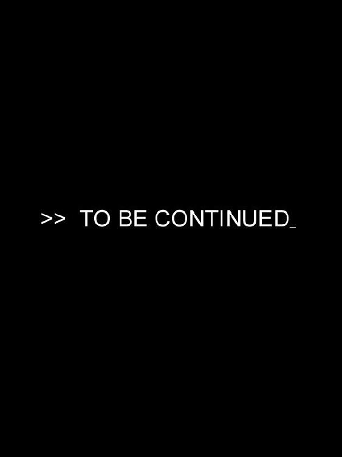

| NO.6 [ナンバーシックス] #02 | |
| あさのあつこ | |
| 講談社 (2007) | |
ebpaj-guide-1.0
ＮＯ．６
〔ナンバーシックス〕
＃２
あさのあつこ
せめて、おまえだけでも、生きて伝えてくれ、事の次第を、何も知らぬ人たちにも、納得のいくように、ありのまま。
（ハムレット 第五幕 第二場 福田恆存 訳 河出世界文学全集）
本を閉じる。
雨の音がしていた。
地下にあるこの部屋には、外部の物音はほとんど伝わってこない。しかし、なぜか雨と風の音だけは、密やかに染みてきた。
小ネズミが膝にかけあがってくる。ヒゲの先を動かし、せがむように前足をすり合わせた。
「この本、読んでほしいのか？」
チッ。
「おまえは、本当に悲劇が好きだな。もっと楽しい物語にしたら」
小ネズミは、顔をあげ、葡萄色の目を瞬かせた。紫苑は椅子に深くかけなおし、小ネズミを膝にのせたまま、足を組んだ。
椅子は、その昔、かなりの調度品であったらしく、がっしりした造りや背もたれに彫りこまれた精緻な文様に、その名残が窺える。しかし今はひどく古ぼけて、あちこちの色が剝げ落ち、クッションも元の色模様が判別できないほど褪せていた。それでも、ここにある数少ない家具の一つだ。一週間前、部屋の床面積の三分の二を占める本の下から、紫苑が探し出してきた。
「この分なら、本を整理すれば、もっとすごいお宝が出てくるかもしれないな」
半ば本気の紫苑の言葉を、ネズミは鼻の先で笑った。
「そんな、くだらないことを考える前に、体力をつける訓練でもしたら。あんたは、生まれてから一度も力仕事なんか経験したことのないおぼっちゃんで、それでなくても青っ白いんだからさ」
「ぼくは、公園の清掃業務に携わってたんだ。力仕事なんていつも、やってた」
ネズミの肩があがる。声に揶揄の響きがこもる。
「公園の清掃業務？ ＮＯ．６の森林公園の清掃が力仕事の範疇に入るのか？ あんたは、ただ清掃用のメンテナンスロボットを操作してただけじゃないか。力仕事っていうのはな、おぼっちゃん」
ネズミは、紫苑の腕を思わず顔をしかめるほどの強い力で摑んできた。一見華奢な細い指なのに、驚くほどの握力を有している。
「この腕や脚や腰を使ってやるもんなんだよ。生身の身体を使ってな。覚えとけ」
ネズミの毒も皮肉もたっぷりと含んだ言い方には、もう慣れてしまったから気にもならない。毒の中に皮肉の裏に、頷かざるを得ない真実が潜んでいて、気に障るより先に納得してしまうことも度々だ。確かに、聖都市ＮＯ．６で、紫苑のやっていた仕事は、操作器機のキーを叩くことが主だった。生身の肉体がきしむような経験をしたことはない。汗が滲み、手の皮が破け、筋肉が疲労する。耐え切れないほどの空腹を覚え、心地よく眠りにおちる。
経験したことは、一度もなかった。
「だからやるんだ」
紫苑は、堆く積まれた本の山々を指差す。
「これを整理し、分類して、ちゃんと並べるのって、正真正銘の力仕事だろう」
「百年かかる」
「一週間でやるさ」
ネズミは、もう一度肩を竦め、お気に召すままと呟いた。
「好きにすればいい。けど、本と本棚以外のものを勝手につっつくな」
「本と本棚以外のものなんて、ほとんどないじゃないか」
「すごいお宝が出てくるかもしれない。正直、おれもこの下に何が埋まってるかなんてわかんないから」
小ネズミたちが、本の隙間に潜りこみ鳴き交わしている。紫苑は、薄緑色の小さな本を手に取った。
「ネズミ」
「うん？」
「きみは、いつからここに住んでいる？」
コンクリートのむき出しの壁、何千という本、地下室、人の住居に相応しい場所とは思えない。
「ここで育ったわけじゃないだろう。生まれた場所は」
口をつぐむ。ネズミの灰色の瞳が険しい光を宿していることに気がついた。
「あ......悪かった」
ネズミは紫苑の手から本を取り上げ、放り投げる。
「当分、ここにいるつもりなら」
超繊維布を肩にまきつけると、一つため息をついた。
「その詮索癖を何とかしろ。何でもかんでも鼻をつっこんでこられちゃ鬱陶しくてたまらない」
「詮索してるわけじゃない。ぼくは、ただ知りたかっただけだ」
「知りたいことをあれこれ聞き出して、ほじくってみる。そういうのを詮索って言うんだ。それも覚えとけ」
突き放すような言い方に腹が立つ。なぜか無性に腹立たしい。詮索なんかじゃない。出て行こうとするネズミの腕を摑む。
「ぼくは何も知らない。だから知りたかったんだ」
「だから、それを」
「知る必要がないことなら、知りたいなんて思わない。だけど、知りたいんだ。ぼくにとって知る必要があるから、知りたいから、アチッ」
舌をかんだ。思わず口を押さえてしゃがみこむ。口中の痛みに涙がにじむ。ネズミが吹き出した。
「まったく、あんたって極めつきの天然だな。見てて飽きない......だいじょうぶか？」
「なんとか。舌をかむのってすごい痛いことなんだ」
ＮＯ．６にいたころ、つまり生まれてから十六の歳まで、言い急いで舌をかんだことなど、一度もなかった。心が急いて、言葉が追いつかず、思わず相手の腕を摑んだことも今が初めてだ。
「それで？」
ネズミが膝をついて、紫苑の顔を覗き込む。最上質の布のように光沢のある瞳は、もう穏やかに凪いでいた。
「何を知りたいって？」
「きみのことを......きみのことを知りたい」
ネズミの口がぱくりと開いた。瞬きを繰り返す。
「紫苑、あんた、変な本でも読んだのか？」
「変て？」
「こてこての恋愛小説。不幸な女のもとに王子さまが現れたり、引き裂かれた恋人たちが苦難を乗り越えて結ばれる話」
「読んでないけど」
「じゃ、きみのことを知りたいなんてセリフ、どこで教わった」
「教わらなくても、そのくらい言える」
「真面目に言ってるのか？」
「あたりまえだろ。ネズミ」
紫苑は唇をぬぐい、目の前の灰色の瞳を見つめてみる。
「知りたいんだ。何も知らないから知りたい。ぼくが知っているのは、きみがぼくを救ってくれたことだけだ。本当の名前も生い立ちも、何故ここに一人で住んでいるのかも、今考えていることも、これから何をする気なのかも、知らない。きみのことを何一つ知らないんだ」
手首を摑まれる。ネズミの指はいつもひやりと冷たく、硬い。
「じゃっ、教えてやる。ここに手を当ててみろ」
言われるままに、ネズミの胸に手をおく。
「何を感じる？」
「何って......男の胸だなって思う。硬くて平たい」
「はいはい、巨乳じゃなくて残念でした。他には」
「他には......」
粗い素材のシャツを通して手のひらに伝わってくるもの。
鼓動、体温、硬い肉の感触。
なぜか口にすることが躊躇われて、紫苑は手を引き、指を握りこんだ。ネズミが、くすりと笑う。
「ちゃんと心臓が動いてた。それに温かい、だろ？」
「あたりまえだ。きみは生きてる。心臓が動いてるのも体温があるのもあたりまえじゃないか」
「そうだよ。おれは生きて、今、あんたの前にいる。それで充分だ。これ以上の何を知りたい？」
「だから、それは......」
ネズミは立ち上がり、紫苑を見下ろした。指先と同じ、ひやりと冷たい視線だった。
「あんたの欲しいのは情報なんだよ。生年月日、生育歴、身長、体重、知能指数、ＤＮＡ。数字に置き換えられる情報が欲しいだけだ。あんたは、そこからしか人間を知ろうとしない。だから、目の前にいる生きた人間がわからないんだ」
紫苑も立ち上がる。さらに強く指を握り締める。
「きみは、皮肉屋で他人をからかうのが好きで、魚料理が苦手で、寝相が悪い」
「は？」
「膨大で雑多な知識をもっているけれど、体系だってはいない。気まぐれで神経質かと思えば、ずぼらでいいかげんだ。熱々のスープが大好きで、塩加減をまちがえたらすごく機嫌が悪くなる。昨夜は、寝ぼけて、ベッドの中でぼくを三度蹴っ飛ばした」
「紫苑、ちょっと待てったら」
「ここに来て、それだけのことを知った。数字じゃない。ぼくは、きみを数字になんか置き換えない。そんなことをしたいんじゃないんだ」
ネズミの視線がつっと横にそれる。
「あんたにとって、おれは他人だ。他人になんか興味を持たないほうがいい。四年前おれは、あんたに命を救ってもらった。大きな借りがある。だから、今度はあんたを助けた。望むなら、好きなだけここにいて好きなことをすればいいさ。だけど、他人のことを知りたいなんて思うな」
「なぜ」
「邪魔になる」
「邪魔？ 知ることが邪魔になるのか？」
「あんたみたいなタイプにはな。知識を詰めこむ能力には長けているけれど、情に脆い。簡単に他人を信じ、結びつこうとする。おれ、前に言ったよな。余計なものは全て断て、捨てろって」
「ああ......」
「なのに、あんたは正反対のことをしようとしている。おれに興味を持ち、知りたいと望んでるんだ。さらに余計なものを背負いこもうとしている。どうしようもないバカだ」
ネズミの言うことが理解できない。今まで読んだどの専門書よりも難解で捉えがたい。
「ネズミ......理解できない」
素直にそう言ってみる。ネズミは軽く肩を竦めた。
「知れば情がわく。何の関係もない他人のままじゃいられない。そうしたら、あんたが困るだろう」
「ぼくが？ なんで？」
「敵になったとき、殺せなくなる」
わずかに笑いを含んだ声が告げる。紫苑は、古ぼけた絨毯の上で足を踏みしめた。
「あんたが情に囚われて躊躇している間に、おれは、あんたの心臓にナイフを突き立てることだってできる。ナイフってのは、すごい古典的武器だけど結構役に立つんだよな」
「なんで、ぼくときみが敵にならなくちゃいけない。そんなこと考えるの、おかしい。それこそ、バカげてるじゃないか」
「そうか。案外ありそうにも思えるけど」
「ネズミ！」
バサバサと大きな物音がした。本が崩れたのだ。小ネズミが一匹ネズミの肩にとびのってきた。
「ほら、やるんだったら、さっさと整理にとりかかれよ。一週間なんてあっという間だぜ。おれは、仕事に出かけてくる」
軽やかに身を翻して、ネズミは部屋から出て行った。身体の力がぬける。嫌な汗をかいていた。ネズミとの会話は、時に汗がにじむほどの緊張を強いられる。乾いた唇を舐めてみる。そして、
「きみが何の仕事をしているのかだって、知らないじゃないか。知りたいだけだ。なのに......バカはどっちだよ」
呟いてみる。それから、積み上げられた本の整理にとりかかった。
「紫苑」
ドアが開き、ネズミの声がした。作業用の手袋が投げられる。
「素手でやると爪が割れるぜ」
礼を言う間もなくドアは閉まり、部屋は静まりかえる。
このさりげない優しさとさっきの冷淡な言葉。どちらを信じればいいのだろうか。摑みきれない。だから、摑みたい。
紫苑は、手袋をはめ、床の本を持ち上げた。
そうだな。こういう仕事をするときには、手袋をしたほうがいい。そんなことも知らなかったな。
数字に置き換えられる情報が欲しいだけだ。あんたは、そこからしか人間を知ろうとしない。
数分前、自分に向かって投げつけられた言葉が耳の奥底にうずくまっている。
人間を情報として解析する方法は、ＮＯ．６にいた頃、市の幼児検診で最高ランクに認定され、最上級の教育環境を与えられた時から、教わってきた。
人体を構成する細胞は、二百七十四種類六十兆個。種ごとの名前も形も機能も全て記憶している。各臓器の働きも位置も、扁桃体や嗅周囲皮質から海馬への情報伝達経路についても学んだ。
それが役にたたない。どれほどの知識を動員しても、もう一ヵ月近くを一緒に暮らしている人間一人を理解することができない。
自分たちがいつか敵同士になると、ネズミは本気で思っているのだろうか。殺し合うようになると......そんなことがありうるだろうか。ネズミの言動は、いつもどこか謎めいて不可思議で、紫苑を混乱させる。
摑みきれない。だから、摑みたい。数字にも記号にも決して置き換えられない部分を知りたい。
頭を振る。足元で小ネズミたちが走り回る。
やめよう。ぐちゃぐちゃ考えてもしかたない。今は、この本と格闘するんだ。
すぐに汗ばんできた。腰が痛くなり、腕がだるくなる。しかし、たびたび作業を中断させるのは、身体の疲労や痛みではなく、本の内容そのものだった。何気なく広げた物語にひきこまれて、床に座りこむ。そのまま読みふけってしまう。その度に、小ネズミがページの上にとびのってくる。
「ちょっと待ってくれよ。もうちょっと読んだら片付けるから」
「チチッ」
「わかったよ。やるよ、やればいいんだろう」
そして三日目に、古い科学雑誌の下から、それを見つけた。銀色の小さな箱。救急ケースだ。紫苑のものだった。
四年前の嵐の夜、ネズミは、突然の侵入者としてずぶぬれの姿で紫苑の前に現れた。肩にべとりと血糊をつけ、濡れそぼった少年は今にも倒れてしまいそうで、思わず手を差し伸べていた。侵入者への恐怖を忘れるほどに強く、庇護欲をかきたてられたのだ。少年がＮＯ．６では凶悪犯罪者を表すＶＣであることがわかっても、それは衰えなかった。紫苑は、ネズミを匿い、傷の手当てと束の間の安静を彼に与えた。躊躇いはしなかった。そうせずにはいられなかった。結果、当時紫苑が持っていたほとんど全てのもの、豊かで安定した生活の大部分を失ってしまったのだ。
あの夜、明らかに銃創とみられるネズミの傷を、このケースの中の器具や薬剤で治療した。次の日の朝、目覚めた紫苑の前から消えていたものは四つ、貸した赤いチェックのシャツとタオル、救急ケースとネズミ本人。そのうちの二つは、戻ってきた。いや、このケースはともかく、ネズミが戻ってきたというのは違うかもしれない。罠にはまり、治安局によって矯正施設に連行されそうになった紫苑を救い出し、ＮＯ．６の外側まで連れ出してくれたのは、ネズミだった。
あいつが戻ってきたんじゃない。ぼくが、あいつのもとに転がりこんだんだ。
それが現実だった。聖都市とまで呼ばれた理想郷から、日も射さない地下室へ堕ちてきた。正規の手段ではもう二度と、ＮＯ．６へは帰れないかもしれない。あそこに、母を残してきた。逃亡犯とみなされている息子を母の火藍は、どれほど案じているだろうか。考えても詮無いこととわかっているけれど、心が痛む。
ネズミのようには捨てきれない。断てない。生きられない。何かにすがっていなければ崩れそうになる。誰かを想っていなければ狂いそうになる。
ケースの蓋を開けてみる。自動殺菌装置は、まだ正常に作動しているらしい。やや赤みがかった殺菌灯の光の中に、メスやガーゼがうかびあがる。
なんだか旧友に会ったような懐かしい気分がわいてきた。
「チチッチチチッ」
「え？ わかってるよ。ちゃんと働いてるって。おまえ厳しいな」
笑ってみる。答えるように小ネズミは、前足をあげて小さく鳴いてみせた。
そして、一週間、床を占領していた本を、紫苑は独力でほぼ片付け終わった。むろん、全てを収納することは不可能で、床の上で山になった本もたくさんあるけれど、生活空間はかなり広がった。
「どうだ」
胸をはってみる。ネズミは、椅子にだらしなく腰掛けたまま、ふわりと欠伸をもらした。
「救急ケース、毛布数枚、マグカップ、旧式のストーブ。掘り出したのはそれだけか？」
「充分だろう」
「ＮＯ．６への入市許可書が出てこなくて残念だったな」
紫苑は、ネズミの前に立ち、その目を見据えた。本気で言葉を使おうとするとき、相手から目を逸らしていてはだめだ。ネズミと暮らした一ヵ月で学んだことの一つだ。
屈みこみ、椅子の肘掛けを手で摑む。
「なんだよ？」
紫苑に正面を塞がれる形になり、ネズミは椅子の中で身じろぎをした。
「ネズミ、ＮＯ．６には母がいる。たった一人の肉親だ。きみにどう笑われようと、母さんを捨てきることはできない。だけど......だけどな、あの都市での生活に未練はない。もし、時を遡ることができたとしても、ＮＯ．６の正規市民としての資格を所有していたころに戻りたいとは思わない。ほんとに、少しも思わないんだ」
紫苑の視線を受け止めた灰色の瞳は、瞬き一つしなかった。
「ＮＯ．６の生活を贋物だときみは言い切った。それを実感できる。もう二度と、贋物の、見せ掛けだけの平和や豊かさの中で暮らしたいとは思わない」
「聖都市の外側で生きる覚悟があるってことか？」
「そうだ」
「ここがどんな場所かわかって言ってるのか」
返答につまる。ネズミの唇が歪み、冷笑が浮かぶ。
「あんたは何も知らない。飢えることも、凍えることも、手当てが遅れて化膿した傷の痛みに呻くことも、その傷に蛆がわき、生きながら腐っていく苦悶も、目の前でなす術もなく人が死んでいくことも、何一つ知らない。知らないで奇麗事を並べてるだけだよ。何が実感だ。あんたは、あの都市の上辺をほんの少しめくって、そこの臭いを嗅いだだけじゃないか。それで、全部わかったようなことを言う。贋物だろうが見せかけだろうが、ＮＯ．６には、暖かな寝床もたっぷりの食べ物も清潔な水もある。完璧な医療設備、娯楽施設、教育機関。ここに住む者たちが、どれほど望んでも決して手に入らないものばかりだ。それに未練がないだって？ 傲慢だよな。虫唾が走るくらい傲慢だ。でなきゃ噓つきだ」
息を吸いこむ。肘掛けを摑んだ指に力をこめる。
「傲慢かもしれない......だけど、噓はつかない。ここがどんな場所であろうとも、ぼくはここで生きていきたい。逃亡犯としてＮＯ．６を追われたからじゃない。そうでなくても......どんな劣悪な環境であっても、ここにいたいんだ」
「理由は？ 噓でも奇麗事でもないなら、何があんたをそこまで決意させた？」
「きみに惹かれている」
「は？」
「きみは、ぼくの知らないことを知っている。今まで誰も教えてくれなかったことを教えてくれた。うまく言葉にできないけれど......惹かれているんだ、とても。だから、ここにいたい。きみと同じものを見て、食って、同じ空気を呼吸する。ＮＯ．６では決して得られないものを手に入れたい」
ネズミは、ゆっくりと二回瞬きをした。それから、片手で額をおさえてやはりゆっくりと首を振った。
「紫苑、前から気になってたんだけどな」
「うん」
「あんたの言語能力は、チンパンジー以下だぜ」
「人とチンパンジーのゲノムの違いは、一・二三パーセントしかないって聞いたことがある。あんまりチンパンジーをバカにしないほうがいいと思うけど」
「あんたをバカにしてんだよ。バカ。もう少し適切な表現ができないのか」
「どこか、おかしかったっけ？」
「惹かれているなんて言葉、簡単に使うな。それは、とても重い大切な言葉なんだ。大切なかけがえのない相手に向かって言うもんなんだよ」
「じゃどう言えばいい？ 愛してるって言うのか？」
ネズミは、わざとらしく長いため息をつき、もういいと呟いた。
「あんたと話してるとこっちまで、おかしくなる。ほら」
分厚い本を紫苑に押しつけ、ネズミは立ち上がった。
「『ハムレット』だ。読んでみろ」
「一度、読んだ」
「もう一度読め。その貧弱な言語能力を少し鍛えろ。言葉を覚えるんだ」
「言葉の使い方、そんなにまちがってたか？」
ネズミの口調が、いつもより少し早くなる。
「あんたは、珍しいものが好きなだけだ。新種のバクテリアや未知の惑星を発見した学者みたいなもんだ。今まで自分の周りにいなかった型の人間に会って、好奇心と期待にうずうずしている。それだけなんだよ。おれに惹かれているわけでもおれを愛しているわけでもない。珍種の生き物に喜んでるだけだ。そんなことさえわかんないのか」
辛辣な言葉だった。鋭利な棘となって鼓膜に突き刺さるようだ。
「おれは、あんたを信用していない」
顔をあげる。視線とぶつかる。唇をかみしめていた。
「あんたの言葉を信用しない。あんたは、生まれたときからずっと、贋物の豊かさに包まれて生きてきた人間だ。その豊かさを捨てるとあっさり口にできるほど傲慢な人間だ。紫苑、あんた、公園の清掃業務に携わっていたとき、毎朝〝儀式〟をやってたよな」
仕事の最初にある儀式。管理システム機器のディスプレー上に現れたＮＯ．６の市庁舎、俗に『月の雫』と呼ばれている建物の画に手をのせ、市への忠誠を誓うのだ。
『市への変わることのない忠誠を誓います』
『あなたの忠誠に感謝します。市民としての誇りと誠意をもって、一日の労働に従事してください』
それだけだった。それを毎朝、繰り返してきた。苦痛ではあった。陳腐で大仰な誓いの言葉、儀式そのものの滑稽さに、若い自尊心が疼いていた。
ネズミがふっと笑う。
「あれ、嫌だったろう」
「ああ」
「忠誠を強要されて、息苦しかったろう」
「ああ......確かに」
「なのに、あんたは我慢してた。抗わず、心にもない誓いの言葉を毎朝唱えて、平気な顔をしていた。紫苑、言葉ってのはな、あんたみたいに軽々しく使っちゃいけないんだよ。押し付けられて平気でいては、だめなんだ。あんたは、それを知らない。だから、信用しない」
ふいに手がのびてきた。ネズミの手のひらが頰に触れる。
「きつかったか？」
「かなり」
「おれは......あんたのことを憎んでるわけでも、嫌ってるわけでもない」
「うん......そのぐらいは、わかる」
「紫苑」
「うん？」
「外に出てみるか」
指が髪をまさぐる。
「体力はもう完全に回復したろう。あんたが生きていくと言った場所がどんなところか、自分で確かめてみるか」
ネズミはゆっくりと手を引いた。長い指に、数本の白髪がからみついている。白いけれど艶があり、見ようによっては美しい。その美しさを残酷だと感じてしまう。一夜にして変色した髪とヘビを思わせて全身を蛇行する帯状の赤い皮膚変異。それを間近に見た子どもに悲鳴をあげられた。あの子たちの目が忘れられない。異形の化け物を見たときの恐怖と驚愕。しかし、出て行かねばならない。自分の生きていく世界を自分の目で見、耳で聞き、鼻で嗅ぎ、皮膚で味わいたい。そのうえで、もう一度、ネズミに語りかけてみよう。
ここがどんな場所であろうとも、ぼくは、ここで生きていきたい。贋物に包まれて、陳腐な言葉を呑み込みながら生きるより、ぼくは、ここでもがきながらでも......。
「髪ぐらいなら染められる。黒でも栗色でも緑でもお好きなようにな。どうする？」
「いや、いい」
「このままで？」
「うん、このままでいい。白髪ってのも悪くない。丸禿げよりましかもって思う」
ネズミが顔を俯ける。肩が小刻みに揺れた。
「あんたって、ほんとうにおもしろいよな。真面目におもしろい」
「そうかな......おもしろいなんて言われたこと、あんまりないけどな」
「天然のコメディアンだよ。小難しい理論書を読むより、そっちの勉強したほうが絶対いいって」
「考えてみる」
「そうしろ。じゃっ、明日、ここを案内してやる」
「うん」
「それに、あんたには、行かなくちゃいけない場所があるからな」
「ラッチビルか」
ＬＫ‐３０００あたり、ラッチビル３Ｆ 自信なし 火
火藍からのメモだった。そこがどこなのか、誰がいるのか見当もつかない謎に近いメモだ。
「ラッチビルって、わかったのか？」
「わからない。ここには、住所番号なんてしゃれたものはないからな。ただ、ずっと昔、ここがまともな街だった時期がある。そのときの地図を手に入れた。そこにＬＫ‐３０００て一区が確かにある」
「調べてくれたのか......」
「暇つぶしにな」
「きみに暇があるなんて思わなかった。いつも、忙しそうで......」
紫苑の言葉をネズミはそっけなく遮った。
「それと、手紙を書け」
「え？」
「あんたのママにだよ。ただし、十五字以内。簡単なメモだ。この小ネズミが、ママの焼いたパンが食いたいんだってさ」
「手紙を届けてくれるのか」
「メモだよ。十五字以内。上手く届くかどうか保証しない」
「ネズミ」
「なんだよ」
「ありがとう」
ネズミは身をひいて、紫苑の顔を凝視した。
「頼むから、そんな目でお礼なんか言わないでくれる。背中が痒くなる。明日のことは明日だ。おれはシャワーをあびてくる。それと、ママに手紙を書くより先に、そいつにちゃんと本を読んでやれ。さっきからずっと待ってる」
ネズミが浴室に消えていく。紫苑は椅子に腰掛け、さっき渡された本を開いてみた。微かな紙の匂い。引きこまれ読みふける。
『ハムレットのことを思うてくれるなら、ホレイショー、しばし平和の眠りから遠ざかり、生きながらえて、この世の苦しみにも堪え、せめてこのハムレットの物語を......』
友人の腕の中で、ハムレットは息絶える。紫苑は、本をゆっくりと閉じた。雨の音がしていた。地下にあるこの部屋に、なぜ雨音はしみてくるのだろう。穏やかな音楽のように、しみてくる。
生きながらえて、この世の苦しみにも堪え。
生きながらえることは、苦しみに堪えるということと同義語になるのかもしれない。ネズミは、それを身体で知っている。足元で小ネズミが鳴いた。
「あっ、ごめん。どの本がいい？」
小ネズミが膝にかけあがり、前足をすり合わせる。
「この本、読んでほしいのか？」
チッ。
「おまえは、本当に悲劇が好きだな。もっと楽しい物語にしたら」
小ネズミを膝にのせたまま、足を組む。
「読んでやれよ。悲劇をさ」
背後でネズミの声がした。いつのまに、浴室から出てきたのか、気がつかなかった。気配も物音もしなかった。
「あんたはいい声をしてる。そいつは、朗読が大好きなんだ。あんたに悲劇を読んでもらいたいんだよ」
「そうなのか？」
葡萄色の目をした小さなネズミが瞬きをする。肯定の意らしい。
「わかったよ。じゃ第五幕の最初から」
「しっ」
ネズミの湿った手のひらが紫苑の口を押さえてきた。
「聞こえる」
「え？」
何がと問う間もなく、紫苑の耳にも届いた。階段を駆け下りてくる足音。分厚いドアが叩かれる。ノックの音は、ドアの真ん中あたりで、忙しく、しかしさほど強くもなく響いている。
子どもだ。
小さな子どもが、必死にドアを叩いている。紫苑は立ち上がってドアに向かった。
「待てよ」
ネズミが止めた。濡れた前髪の下で、灰色の目がドアを見据える。
「勝手に開けるな」
「なぜ？」
「危険だ。無防備のままドアを開けるな」
「子どもだ。しかも急いでいる。何かあったんだ」
「なんで、そう言い切れる。武装した兵士でもドアの下を叩ける」
紫苑はネズミの顔からドアに視線を移した。
助けて。
か細い声を聴いた気がした。つばをのみこむ。ドアの鍵をはずし、ノブに手をかけた。
「紫苑！」
開ける。冷気が吹きこんできた。外はもう薄暗く、冷え冷えとした風が吹いている。
薄闇の中に女の子が立っていた。紫苑を見上げた目に涙がたまっていた。見覚えがある。くぼ地のバラックに住む子だ。忘れられない子だった。紫苑の白く変色した髪と首を廻った赤い痕に、悲鳴をあげた少女だ。自分を異形として恐れる視線に、あの時、初めて出会った。しかし、今、涙を湛えた大きな瞳には恐怖ではなく、切迫した感情だけが浮かんでいる。
「助けて、早く、死んじゃう」
女の子の手を握り、階段を駆け上がりながら叫ぶ。
「ネズミ、救急ケースと毛布」
落葉した裸の木々が林立する外部へ、紫苑は飛び出していった。
そこで女神ハンナハンナは、とっておきの手段によることにしました。彼女は何匹もの、いや何百匹、何千匹もの蜂を呼びよせ、そして言うには、「おまえたちは、体が小さく、身が軽く、進むこと光のように速いから、きっとテリピヌ神を見つけ出すことができるでしょう。さあ、行きなさい」
（テリピヌの神話。『メソポタミアの神話』矢島文夫 筑摩書房）
ひときわ幹が白い細木の根元に、人が倒れていた。少女よりさらに小さい。男の子だった。もがいている。抱き上げる。薄闇の中でさえ、顔が真っ青だとわかる。喉をかきむしって、口を開けているけれど、唇に血の気はなかった。
呼吸困難。喉に何かを詰まらせている。猶予はなかった。腹を抱え上げ、背中を平手で強く叩く。
「吐いて、ほら、吐き出すんだ」
二度、三度、骨ばった背中を叩き続ける。四度、五度......。
「ぐえっ」
男の子の口から、吐瀉物が流れ出た。黒ずんだ丸いものが交じっている。男の子の身体がぴくりと痙攣した。
「水を、水をもってこい」
ネズミに向かい、もう一度叫ぶ。男の子を横たえ、自分の頰を口に近づけてみる。確かな呼吸が感じられた。
だいじょうぶだ、息をしている。
気道確保も人工呼吸も必要ないはずだ。しかし、意識は......。
「名前を呼んで」
紫苑の言葉に少女は機敏に反応した。男の子の顔にかぶさるようにして名前を呼ぶ。
「リコ、聞こえる、リコ」
「リコ、息ができるか」
男の子の胸が大きくふくらむ。まぶたが開いた。涙の粒がぽろりと落ちる。
「......おねえちゃん」
「リコ」
抱きかかえようとする少女を制止して、紫苑は男の子の上半身をゆっくりと持ち上げた。水の入ったコップを口元にもっていく。
「飲めるか？」
「うん」
「いい子だ。ゆっくり飲んで。リコって名前なんだね」
「うん」
「リコ、おねえちゃんやぼくの声が聞こえるな。ちゃんと見えるな」
「うん......水がおいしい」
「いい子だ。ほんとにいい子だ。お腹、痛くないか。胸が苦しくないか」
「喉が......」
「うん？」
「喉が......痛い」
苦し紛れにかきむしったのだろう、リコの首には血の滲んだ痕がいくつもついていた。
救急ケースの中からガーゼと消毒用アルコールをとりだす。もう四年も前のものだけれど、ここには今、これしかない。
「しみるぞ。泣くなよ」
「泣かない」
傷口を拭き、新しいガーゼで押さえ、包帯を巻く。基本的な応急処置しかできなかった。これが精一杯だった。
すぐに病院へなどと口にしたら、またネズミに嘲笑される。ＮＯ．６の西ブロックにあたるこの地域に、まともな医療機関などないことは、わかっていた。
紫苑は吐瀉物の中から、リコの気道を塞いでいただろう丸いものを拾い上げた。
「木の実？」
ころりと丸い木の実だった。
「なんで、こんなものを......」
リコがうつむく。ネズミが立ったまま腕を組み、ふっと息を吐いた。
「腹が減ってたんだよ」
「え？」
「腹が減って堪らなかったんだろ。その実、粉にすると、まあ食えるんだ。集めてるうちに腹が減って、つい口に含んでいるうちに......誤ってのみこんでしまった。そういうとこなんじゃないの」
「リコは、いつもお腹をすかしてるの」
女の子が言った。
「母さんのパンを分けてもらっても、まだ足らないの」
「パンが小さいんだよ。ぱくって食べたら、もうなくなるし」
リコはそう言ったあと、軽く咳きこんだ。声がかすれている。顔色もまだ悪い。毛布でその身体を包む。
「暖かくしてるんだ。傷が痛むようなら、手当てをしてあげる。また、おいで」
「送っていってやれよ」
ネズミの言葉に、顔をあげる。
「ぼくが？」
「あんたがだよ。あんたが、助けたんだ。最後までめんどうみてやれよ。この坂を下った先の家だ。たいした距離じゃない。母親が心配してるころなんじゃないか」
だとしたら、この姿を大人にさらすことになる。立ち上がる。なぜか震えがきた。
「けど、ぼくは......」
「どうせ外に出て行かなきゃならない。こんなとこで躊躇してるようなら、街中なんて歩けない。まっ、おれはどうでもいいけど。それより、こんなとこで、ぐずぐず雨にぬれてると今度は肺炎になっちまうぞ」
そういえば雨が降っている。その冷たさにやっと気がついた。身体を芯から冷やしていく雨は、冬の間近な証だった。
「じゃあな、あとは王子さまのお好きなように」
ネズミは背をむけて、地下へと降りていった。リコが小さくクシャミをする。女の子の手が、ふいに紫苑の指を摑んだ。
「ありがとう」
「え？」
「弟を助けてくれて、ありがとう」
「あっいや、そんな......いいんだ。きみの名前は？」
「カラン」
「カラン？ 母さんと同じ名前だ」
「ほんと？」
「うん」
女の子が微笑む。指の先が温かい。紫苑は、毛布ごとリコを抱き上げた。
「家まで送るよ。カラン、案内して」
ストーブにかけた鍋から、湯気がでている。鍋の中はスープだ。野菜や肉を煮込んだスープをかき混ぜながら、ネズミはため息をついた。自分が無自覚にため息をついたことに気がつき、慌てる。スープが数滴、外に散り、固形燃料用ストーブの上でジュワリと音をたてた。
ため息は嫌いだ。自覚してつくならまだしも、思わず知らず口からもれるため息など、虫唾が走る。
「本気でため息などつくな。泣くな。魔につけ入られるぞ」
年齢さえ、とうに捨て去ってしまったような老婆にそう言われた。
「ため息は隙となる。生き延びたければ、口を閉ざせ。誰にも隙を見せるな。誰にも決して心を許すな。誰も信じるなよ」
死ぬ間際の言葉だった。胸を射抜かれて口から血色の泡をふいていたのに、やけに明瞭に耳に届いてきた。忘れようとは思わない。忘れたくても忘れさせてくれない声だ。こびりつき、はがれない。
なのに、背いてしまった。だらしなくため息を一つ、知らぬ間についていた。
まったく、あいつのせいで......。
舌打ちする。
紫苑をここに連れてきたのは、間違いだったかもしれない。本気でそう感じた。
躊躇いもなくドアを開けた。外の様子をうかがうことも、陰に身を潜めることもせず、ドアを開け放った。運が悪ければ命取りになる行動だ。たとえ武装した兵士でなくとも、武器を携えた強盗が子どもを手先に使うことだって、ここでは充分ありうる。紫苑はそれを知らない。疑うことも用心することも怯えることさえ知らないのだ。絶対の安全圏で生きてきた者の鈍感さと無防備さ。
危険でやっかいなお荷物を背負いこんだ。
そう思う。誰に押し付けられたわけでもない。自らの意志で背負いこんだのだ。借りを返したかった。何の見返りも求めず命を救ってくれた相手をみすみす、見殺しにするわけにはいかなかった。
死者に借りは返せない。返済できない借りを一生抱えているのはごめんだ。だから、紫苑を救出しここに連れてきた。しかし、甘かったかもしれない。予想していたよりずっと大きなリスクを連れてきてしまったのかもしれない。鈍感で無防備で、危険でやっかいな......。
ドアにちらりと視線を投げる。
しかし、紫苑があのドアを開けなければ、リコは助からなかった。
気道を塞がれた幼い子が、絶命するのにそう時間はかからない。迅速な行動と適切な処置。おかげで、窒息の苦痛に顔をゆがめた小さな死体を見ないですんだ。命が一つ救われたのだ。四年前の嵐の夜と同じだ。あの時はネズミを今はリコを、紫苑は無防備に受け入れ、救うことができた。
頭でっかちで理論しか知らず、甘っちょろくて疑うことすら学んでいない。天然でバカでハムレットさえ知らなかった。しかし、自分よりも確かに優れている。知識や技量ではなく......知識や技量ではなく何だろう。
「きみに惹かれている」
赤面するような告白を真っ直ぐな感情として伝えようと試み、試みが通じると信じることのできる力だろうか、何の関わりもない他人を自分の危険をかえりみず救える力だろうか。
わからない。わからないことは、やはり危険でやっかいだ。とても......足音。ノック。すぐにドアが開いて、紫苑が帰ってきた。
「ノックしたなら、返事を確かめてから開けろ」
「どうせ返事なんかしないだろう。けど鍵、かけてなかったんだな」
「え？」
「鍵。かかってるかと思った。開けててくれたんだ」
そうだった。鍵をかけていなかった。無用心なことだ。
「まったく、すっかりあんたに毒されちゃったな」
「へ、なんのこと？ それより、ほら、お礼に葡萄もらっちゃった」
貧弱な小さな実のついた一房だ。
「干し魚もやるって言われたけど断った」
「ふーん、さすがに貧民から施してもらうのは、気が引けたんだ」
「いや、きみが魚、嫌いだから」
「おれ？ おれは、食うぜ。好き嫌いを言うほど贅沢じゃない」
「だって、魚料理は苦手だって言ってただろう」
「生は食えないって言ったんだよ。ここでは、生の魚なんて食える衛生状態じゃないって意味で」
紫苑が瞬きして、白髪に手をやる。
「そうだったんだ......けど、まっ、よかった」
「何が」
「カランの家って、あっ、あの女の子、カランていうんだ」
「知ってる」
「あっ、知ってたんだ。母さんと同じ名前でさ」
「あんたの母親のことなんか、おれには何の関係もないけど。それでママが懐かしくて涙でもでたのか。かわいそうにな」
皮肉のつもりだったけれど、紫苑は真面目な顔で首を横に振った。
「そうじゃなくて。リコの下にもう一人、小さな女の子がいて、その干し魚、その子たちの夕食だったと思うんだ。三人で干し魚一匹。もらわなくてよかっただろう。葡萄はどうしてもやるって、何かすごく感謝された。ちょっと嬉しかった」
「どうかな？」
「え？」
「あの子が死んでいたら、カランや他の子の食い分が増えるわけだろう。リコにしたって、ひもじいまま大きくなるより、死んだほうがマシかもって思わないか。あんたは、もしかして、余計なお世話をしたのかもしれないぜ」
紫苑がストーブの前に座りこむ。白というより透明にも近く見える髪が、炎に赤く染まる。若い髪は、色素を失っても本来の艶だけはそのままに残しているらしい。
美しいな。
周りの色に染まって煌めく髪に手を伸ばしてみる。やや硬めのさらりとした手触りがした。ごく普通の髪の感触だ。
「きみが、生きろと言った」
炎に顔を向けたまま紫苑が呟く。
「ネズミ、生きていることに意味がある、だから生きろって、きみが言ったんだ」
「おれは、生きている者が勝ちだって言っただけだよ」
「同じことだろ」
「知るかよ」
死者は何も語れない。骸となって横たわり、土に還るだけだ。怨みも無残も嘆きも憎悪も悲しみも語れない。だから、生き延びるのだ。生きて記憶し伝える。
ＮＯ．６。
あの都市は徒花だ。何の文献にも記録にも残らない夥しい血と骸の上に咲いている。いつか、引き抜いてやる。死者の声が怨みが無残が嘆きが憎悪が悲しみが地に満ちるように、耳を塞いでも聞こえるようにしてやる。それまで、生きて記憶し続ける。忘却など許さない。この身が自分自身に許さないのだ。
「褒められた」
ネズミを見上げて、紫苑はにっと笑った。
「褒められた？ 何を」
「髪。きれいだって、カランのお母さんに褒められた。珍しい、とてもきれいな髪だって」
肩を竦める。
「そりゃあ、珍しいだろう。ここら辺は栄養不良で白髪のある子どもってのは、ごろごろいるけど、あんたみたいに真っ白ってのは、さすがにいないからな」
「珍しいだけじゃない。きれいだって言われたんだ」
「あんた、男のくせに髪の毛褒められて喜んでんの」
「けど、ほら、自信がつくみたいで。明日、きみが街を案内してくれるときに」
「誰が案内するなんて言った」
「きみが言った」
確かに言った。自分から案内すると言った。ふてくされた子どもの気分だ。紫苑から視線を逸らせる。
「おれは、おれの都合で動く。あんたは、勝手にやれ」
「うん。勝手についていく。あっ、それから」
「まだあるのかよ」
「時間のあるとき、カランとリコに本を読んでやる約束をした。絵本とかけっこう出てきたし」
「ここでか？」
「天気がよければ、外でもかまわないけど」
またため息が出そうだ。唇を硬く閉じ、かろうじて堪える。
「あんた、ここを幼稚園にするつもりか」
「この辺りって、そんなにたくさん子どもがいるのか？」
「わんさかいる。ここは、おれの住み家だ。無断で勝手なことをするな。あんまり調子にのるなよ」
ぞんざいな口調になる。胸の奥で苛立つものがある。紫苑といると苛立つ。抑制が利かなくなりそうだ。紫苑が身勝手だとも調子にのっているとも思わない。ただ、見通せないのだ。何を考えて、何をやるか予測がつかない。その行動も言葉も、いつも不意打ちのように降り掛かってくる。疲れる。
紫苑は、テーブルの上に皿を二つ並べた。スープができあがり、柔らかな匂いが漂っている。
「調子にのったわけじゃないけど......カランたちと友だちになったから......」
「はぁ？」
「友だち。ここでできた初めての友だちだ。もっともＮＯ．６では、友だちなんてほとんどいなかったけど。沙布ぐらいかな」
「あの女は、あんたと寝たいと言った。友だちじゃないだろう」
髪の短い、襟足の美しい少女だった。
紫苑、あなたとセックスがしたい。
少女の精一杯の告白を紫苑は、受け止めきれなかった。
まったく、どうしようもない男に惚れたな。
ほとんど面識のない少女に向かって、心の内で呟いてみる。
なぜか、ふいにおかしくなった。
「なに？」
紫苑が首を傾げる。本の上に座っていた小ネズミが二匹、真似るように首を傾けた。吹き出してしまう。
ネズミはしゃがみこみ、腹の底から湧いてくるような笑いに身を委ねた。
雨は、午前中で降りやんだ。雲は去らず、地は冷えたまま夕暮れを迎えようとしている。
雑踏の中をネズミは、足早に歩いている。紫苑は、その背中を必死で追っていた。息がきれる。人とぶつかり、怒鳴られる。頭部にそそがれる好奇的な視線、入り混じりあい溶け合って、もとが何なのかさえわからない匂い、足をとられそうな泥濘、道の両脇にずらりと並んだバラックやテントの店、そこから無遠慮に路上に流れ出る煙、行き交う怒声、嬌声、物売りの声。目が眩みそうだった。
ＮＯ．６の高級住宅街『クロノス』を追われ、住み着いた下町ロストタウンも雑多で賑やかな場所ではあったが、ここに比べれば静謐な保養地のようだ。
主な道路では、乗り物はもちろん人も進行方向によって歩く部分を管理され、ふいに反対方向に進んだり、立ち止まったりすることは原則として禁止されていた。人はみな、整然と同じ方向に歩いていく。人とぶつかることも、知り合いに呼び止められることも稀だった。突発的なできごとなど何もおこらない。おこらないように管理されている。ＮＯ．６はそういう場所だった。
ふいにすぐそばで大声があがった。同時に身体を突き飛ばされる。よろめき、泥濘の上に膝をついてしまった。横を数人の男が走りすぎる。そのうちの一人が抱えていた物が、紫苑の前に転がり落ちる。オレンジだ。
「泥棒！」
バラックの店から銃を摑んだ男が飛び出してきた。でっぷりと太った大男だ。
「泥棒だ。だれか捕まえてくれ！」
誰も手を出そうとはしない。にやついている者、まったく関心を示さない者、何か叫んでいる者、そんな人ごみの中に泥棒と呼ばれた男たちの背中が紛れようとしている。
紫苑は息をのんだ。大男が銃を構えたのだ。気づいた通行人たちが、慌ててしゃがみこむ。
正気か？
正気とは思えなかった。この雑踏の中で発砲するなんて、まともな神経ではない。しかし、大男の顔は真剣だった。銃身の長い旧式の銃器の口は、まっすぐに前に向いている。
逃げる男たちが一人の老婆を突き飛ばした。老婆は何か喚き、またよたよたと道の真ん中を歩き出した。銃口などまったく気がついていない。大男の太い指が引き金にかかる。
第二関節あたりに黒い剛毛のはえた指が引き金を引く直前、紫苑は大男にぶつかっていった。渾身の力で銃身を上にむける。
手のひらに重い衝撃がきた。鼓膜を震わす銃声。暮れていく空に向かって銃口が火を噴いた。よろめく。その足を思いっきり払われ、地に叩きつけられた。息がつまる。
「てめえ、なにしやがる」
視界いっぱいに、銃を振り上げた男がうつる。とっさに避けた。大男は見かけによらず俊敏に動き、転がった紫苑の横腹を蹴り上げた。
「ぐっ」
もう声も出せない。胃の中のものがせりあがってくる。
「てめえも仲間か。ちきしょう、売り物に手ぇ出しやがって」
男の履物は獣脂に似た臭いがした。それがもう一度、まっすぐに腹部をめがけてくる。
「仲間じゃない！」
かろうじて身をかわし叫んだ。叫ばなければ、蹴り殺される。男の動作に逡巡は僅かもなかった。
「仲間なんかじゃない......ちがう」
「うるせえ、泥棒野郎が逃げちまったじゃねえか。おまえが邪魔したんだ」
「邪魔しなきゃ、誰かが死んでたかもしれない......こんなとこで発砲して人にあたったらどうするんだ」
驚いたことに男は笑った。沿道からも数人の笑い声がおこる。
「それがどうしたよ？」
獣脂の臭いを漂わせて、男が笑う。
「それが、おれに何の関係がある、え？」
真顔に戻り、男はふいに紫苑の髪の毛を摑んだ。
「変てこな頭をしやがって、気にくわねぇ」
力まかせに引きずり倒される。頭皮が裂けるように痛む。しかし、身体の痛みより、屈辱と怒りの感情のほうがずっと激しかった。
「やめろ！」
やめろ。手を離せ。人間を家畜のように扱うな。
男に身体をぶつける。膨れた腹に肘が食いこむ感覚がした。ぐえっ。濁った唸り声を発して男は膝をついた。
いつの間にか、周りには人垣ができていた。そこから、拍手と口笛と笑いがおこった。
「いいぞ、若いの。やっつけちまえ」
「オヤジ、殺っちまえよ。ぐずぐずするな」
誰も止めようとしない。遠巻きにして楽しんでいるだけだ。紫苑は人垣の中に、灰色の瞳を捜した。いない。
「てめえ、よくも」
獣に似た唸り声とともに、頰に衝撃がきた。目の中で火花が散った。ほんの一瞬だが、視界が暗くなる。口の中が生温かくなる。生温かいもので満ちてくる。たまらず、吐き出す。血の混じった唾が、土の上にどろりと落ちた。
「ふざけたマネしやがって」
男の顔は紅潮し、震えていた。両眼は血ばしり、毛細血管が赤い網のように浮き出ている。本気の殺意が宿っていた。
「ただじゃ、おかねえ」
眉と眉の間、紫苑の眉間を銃口が狙う。口が閉じられなかった。心臓が飛び出してきそうだ。誰も止めない。これだけの人間が、取り囲んでいるのに誰一人、男を制止しようとしなかった。吐き気がする。目の前の銃口が現なのか幻なのか判断がつかなくなる。
「おい」
野太い声がした。店頭で肉を焼いている男だ。もうもうと煙の立ち上る網の上に、黒っぽい肉が並んでいる。
「おれの店先を汚すな」
「汚してねえだろう」
「これから汚すだろうが。血だの脳みそだのが飛び散っちゃ食い物が不味くなる。他所でやれ」
「けっ、半分腐った肉なんて不味いに決まってる」
「ああ？ 腐った肉？ そっちこそ腐りかけた果物や野菜を売ってるくせに、よく言うな」
「うちの品物は新鮮だ」
「笑わせんな。この時期でも、ハエがぶんぶんたかってるじゃねえか。腐ってなきゃあ干からびちまってる」
「てめえ、よくも」
男たちが摑み合った瞬間、紫苑は起き上がり走り出した。
「あっ、ちきしょう。待て」
男の怒声。振り向く余裕などない。背中を撃ちぬかれる恐怖に身が縮む。足がもつれる。
「こっち」
腕を摑まれる。
「こっち、早く」
引きずりこまれた場所は、建物と建物の間の狭い路地だった。建物の壁にもたれ、息をつく。
「だいじょうぶだった？」
顔をあげる。女が微笑んでいた。赤く塗られた唇が薄い闇の中に浮かび上がる。それがぱくりと動いた。
「あらまぁ、唇の端、切ってるじゃない。血が出てる。酷い目にあっちゃったね。かわいそうに」
強い香水の匂いが、鼻の奥まで入りこんでくる。
「ありがとうございました」
紫苑は息を整え、礼を述べた。ほんの数秒の沈黙のあと、女がふいに笑い出した。
「お礼なんて言われたの何年ぶりかな。ねえ、変わった髪してるのね。ぼうや」
「え......まあ、いろいろ事情があって......」
「みんな、事情のあるやつばっかりよ。あたしだってね」
この寒さだというのに女は肩の露になった薄いワンピースを着ていた。胸の辺りを広げてみせる。豊かな乳房が現れた。その白さは、赤い唇よりくっきりと際立った。目にしみる。
「ほら、ここ。火傷の痕があるでしょ。昔、男に焼けた鉄の棒を押し付けられてさ。散々よ。けど、ちょっと見、ヘビみたいに見えない？ ヘビが這ってるみたいにさ」
ヘビならぼくも持っている。全身に巻きついている。
そう思った。口にはしない。女は笑い続ける。
「ぼうや、まだ女を知らないの？」
「え？」
「教えてあげようか。この先にあたしの部屋があるの。そこで、ゆっくりと楽しまない。どう？」
「は？」
「遊びましょうって言ってんの」
女の声に苛立ちがこもる。
「夜までの時間、あたしもヒマなの。だいじょうぶ、そんなに高くはつかないから。遊びましょ。ね？」
女の腕が首に回る。身体が壁に押しつけられる。唇がふさがれた。きつい化粧の匂い。くらりと眩暈がする。生暖かな舌が歯の間を割って、紫苑の舌に絡んでくる。
反射的に女の身体を押し返していた。
「なにすんのよ」
「いや......だって......これは......」
「なにぐちゃぐちゃ言ってんのよ。助けてあげたんでしょ。客ぐらいには、なりなよ」
「客って......だって、ぼくは......」
「嫌なら、どうしてもってことはないけどね。だけどキスはしたんだから、金は払ってもらうからね」
「そんな」
女の唇が歪む。とろりと甘い声になる。
「ほら、駄々をこねてないで。あんただって男でしょ。ね、楽しくやろうよ。たっぷりと楽しませてあげるから、あたしの部屋にいきましょう、ぼうや」
「いや......けっこうです......」
白い腕がまた、絡みついてくる。さっき銃口を向けられた時よりさらに身が竦んで動けない。
「悪いけど、そいつ、おれのなんだ」
路地の入り口にネズミが立っていた。女の眉がよる。
「なんだって？」
「おれのなんだ。返してほしいんだけど」
ネズミが来いというふうに手を差し出す。ああと女が顎をあげた。薄笑いがうかんでいる。
「そういうこと。どうも反応が鈍いと思ったら、このぼうや、女に興味がないわけか」
「え？ いや、そんなことないですけど」
紫苑の口を手で塞いで、ネズミは女に笑いかけた。
「そういうこと。こいつ今おれに夢中なものだから、どんな美女に誘われてもまるで反応しないんだ」
女が肩をすぼめる。ちらりと紫苑を見て、金をと言った。
「ぼうやがどういう趣味をしててもいいけどさ、キスの分は払ってもらうよ。銀貨一枚」
ネズミがくすりと笑った。
「あのキスで銀貨一枚か。えらく高いな」
「そのくらいの価値はあるよ。こっちのぼうやが無理ならあんたが払いな。恋人なんだろ。そのくらいしてもバチはあたんないよ」
「そうだな。そうしよう。つりをもらえる？」
「つり？」
ネズミが女のほうに屈みこむ。とっさに退こうとした女の腕を捕らえ、引き寄せた。
「何を......」
言いかけて半開きになった女の唇とネズミの唇が重なる。紫苑の目の前だった。ほんの一瞬抗った後、女の身体は動かなくなった。無防備に晒された喉もとだけが、ごくりと上下する。
どこかで犬が吼えている。紫苑の足元をドブネズミが一匹、すり抜けていった。女から唇を離し、
「どう？」
ネズミが聞いた。
「悪くないけど」
女が答える。
「おつりまでは無理だね」
「そりゃあ残念だった。じゃ、これをレディに」
ネズミは女の手にオレンジを渡し、背を向けた。紫苑の腕を引っ張る。
「さっ、いこう」
腕組みをしたまま女が声をかけてきた。
「ぼうや、その男に骨抜きにされるんじゃないよ。もったいないからさ、女との楽しみ方も覚えな」
雑踏の中にもどる。さっきまであんなに戸惑っていた人の群れや雑多な匂いに、安堵する。
「なんでだよ」
そう呟いた紫苑の横にネズミが並び歩き出す。
「何がなんでだって？」
「ぼくは、〝ぼうや〟なのに、なんできみは〝その男〟なんだよ」
「人生経験の違いでしょ」
「それに、反応が鈍いって言われた」
「あんたは鈍いさ。女に関しては特にな。悪かったかな。せっかくの初体験の邪魔をして」
くっくっとネズミは軽やかに笑う。
「ネズミ」
「うん？」
「いつから見てた」
「あんたが、あのデブの男に飛びかかっていったあたりかな」
足が止まる。すぐに後ろから人がぶつかってきて、怒鳴られる。
「なんで助けにきてくれなかったんだ？」
「助けてやっただろう。あんた、もうちょっとで魔女に食われるとこだったんだぜ。頭からばりばりとな」
「だってその前に銃を向けられて」
「あまったれるな」
灰色の瞳が鋭利な刃物を思わせてぎらつく。ネズミの笑みは、いつも瞬時に搔き消えてしまう。
「言っとくけどな紫苑、ここでは、他人に守ってもらえるなんて考えてたら生き残れないぜ。自分の身ぐらい自分で守れ。他人に頼ってちゃ生き延びられないんだ。そのことを頭に叩きこんでおけ」
ネズミは、ぷいと横を向くと、速度を上げて歩き出す。紫苑は自分の頰が赤らんでくるのをはっきりと感じた。
そうだ、甘えてた。助けに来てくれるのが当たり前だと思っていた。無節操にずるずると頼りきっていた。対等でいたいと望んだはずなのに、庇護されることを当然としていた。恥じ入る。
超繊維布をマントのように肩に巻きつけた背中のすぐ後ろを歩く。
「けど、さっきはちゃんと自分で守ったな」
ネズミが僅かに歩く速度を緩めてそう言った。
「さっきって......」
「デブの男のほうだよ。隙をみて上手く逃げた」
「ああ、あれ。なんか夢中で。あの男、本気で撃ちそうな気がして......」
「かなり本気だろ。運が悪けりゃ、あんた、今頃頭の半分を吹っ飛ばされて道に転がってたかもな」
「想像したくないな。寒気がする」
ほんとうに身体が震えた。ズボンの膝にも上着の裾にも泥がこびりついている。はらおうとした時、何かにつまずいた。
「うわっ」
前のめりになる。かろうじてバランスを保ち、振り向く。二本の足があった。裸足だ。うつ伏せになった上半身は、路地の闇にのまれている。
眠ってる？ こんなところで？
「あの......聞こえますか」
声をかける。後ろから強く引っ張られた。
「いいかげんにしろ。急がないと真っ暗になっちまう。まったく、どうしてそう寄り道が好きなんだよ」
ネズミが舌打ちする。
「だって、この人、こんなとこで眠ってたら身体が冷えてしまわないか」
「それ以上冷たくはなんないさ。死んでんだから」
「ええっ」
横で衣料品を売っている女が声をかけてきた。
「ちょっと、あんたたち、そいつの知り合いならとっとと片付けておくれよ。邪魔になってしょうがない」
ネズミが微かに首を振る。
「まさか、こんなじいさん、見たこともない」
「ばあさんだよ。物貰いのばあさん。まったく、よりによって、うちの店の横でくたばることないのに、くそっ」
「ご愁傷さま。ちゃんと片付けてやるんだな」
「うるさいよ、ガキめら」
女が赤い布切れを振り回してわめく。紫苑の太ももぐらいありそうな腕をしている。殴られたら吹っ飛びそうだ。
ネズミに引っ張られるまま歩く。枯れ枝のような足が、上等のズボンと革靴に包まれた足と重なる。ＮＯ．６の森林公園の奥まった一角、ベンチの後ろから覗いていた足だ。紫苑が目の当たりにした最初の死体、そして最初のあいつの犠牲者だった。
「あいつが殺ったんじゃないぜ」
紫苑の心の内を見透かしたように、ネズミが薄笑いを浮かべる。
「あのじいさん......ばあさんだったっけ、別に寄生バチに殺られたわけじゃない。飢えか寒さかで、いやきっと両方がいっしょになってあの世に送られたんだ。これから、そういう季節になる」
「そういうって......」
「凍える季節がくる。年寄りか子どもか病人か......弱い者から死んでいく。淘汰の季節さ」
「淘汰の季節......」
呟いてみる。氷菓のように冷たい。氷菓のように甘くも美味しくもない。ただ冷たいだけだ。舌の先が痺れる。
「紫苑、あんたは寄生バチが春になって動き出したら、あの聖都市の中で幾人もの犠牲者が出るって言ったよな」
「うん」
「ここでは、毎日、人が死ぬ。冬場は特にな。ハチに寄生されて食い殺されるのと、飢えて凍えて死ぬのとどっちが楽だと思う？」
無意識に首に手をやっていた。首の付け根に傷痕がある。切開した痕だ。この下にあいつがいた。孵化に失敗し半ば溶解した姿ではあったけれど、あいつはここを食い破り外界へ出ようともがいていた。あの激痛も苦悶も絶望も、まだ生々しい。もう二度と味わいたくない。しかし、それとあの老婆の死を比べることはできない。飢えるということが凍えるということがどういうものなのか、まるで知らないのだ。
「ネズミ、あの人はどうなるんだ？」
「あの人？」
「あの......死体。あのままじゃないよな」
「まさか。いくら凍えるからといって、死体をほったらかしにしていたら腐っちまう。その前に野犬やカラスが集まってきて、どうにもならなくなるからさ、片付ける、ちゃんとな」
「共同墓地みたいなものが、あるんだ」
「墓地？ 死んだ人間に分けるような土地は、ここにはない。『片付け屋』がくるんだよ。あぁ、ほらあれ。あそこで座って肉を食ってるやつら。わかるか？」
ネズミの指差した方向、破れたテントの下に数人の屈強な男たちが座り、脂のしたたる肉を食べて騒いでいた。惨めなほど瘦せこけた犬が一匹、地にしたたり落ちた肉汁を必死で舐めている。
テントの横に奇妙な乗り物があった。自転車の後ろに車輪つきの荷台がくくりつけられている。その上に、大きな籠がのっていた。
「あいつらが『片付け屋』さ。金をもらって死体を片付ける。さっきのおばさんみたいな連中がしぶしぶ金を払うってわけ。自分の店の周りに死体が転がってちゃ困るけれど、他所にもっていって捨てるのも気味悪いし、さすがに気が咎めるってやつが、運が悪いと諦めて『片付け屋』に頼むんだ。行き倒れで身寄りのない死体なんて、ごろごろしてるから、けっこういい商売になるらしいぜ」
「死体をちゃんと葬るのか」
「焼くのさ。一ヵ所に集めて焼く。火葬だと言えば言えないことはないかな。まっ、鎮魂の祈りなんて洒落たものは、欠片もないけど」
骨付き肉を食いちぎっている最中の男と目が合う。まばらな口ひげを脂で汚した男は、にやりと笑った。立ち上がり近づいてくる。放り捨てた骨に瘦せ犬が飛びついた。
「よお、兄ちゃんたち。おごってやろうか」
腕が伸び、避ける間もなく紫苑は髪を摑まれた。
「へぇ、かつらかと思ったら本物かい。おもしろい髪してんだな」
「やめろ、離せ」
「へえ、こりゃあいいや。こんな髪の毛、初めて見たぜ。人形みたいできれいじゃねえか、兄ちゃん」
後ろで仲間の男たちが下卑た笑い声をあげる。横を見る。ネズミの姿はいつの間にか消えていた。
「離せ」
「騒ぐなよ。酒、いっしょに飲まねえか。肉もあるぞ」
「離せったら」
屈強な男の力は緩まない。肉と酒の臭いの混ざる息が頰にあたった。顔をそむける。
ネズミ。
唇をかみしめて、その名を呼びたい衝動を堪える。自分で自分を守ろうとしなければ、誰も助けてはくれない。紫苑は、身体の力を抜いた。
「わかったよ」
「うん？」
「わかったから。酒、一杯だけおごってもらうから」
「そうかい、そうこなくっちゃ兄ちゃん。来な」
男の腕が、わずかに緩む。紫苑は足をあげ、力いっぱい股間を蹴り上げた。
ぐっ。くぐもった呻きをあげて、男が崩れ落ちる。その丸まった背中を飛び越えて、走る。
なんだか、逃げてばかりいるな。
そんな思いが、ちらりと頭の隅を過ぎったけれど、すぐに消えた。全速力で走る。行きかう人の数がずいぶん減っている。走り抜けるには、好都合だった。もう路地はごめんだ。ともかく、まっすぐにこの道を走る。止まれば後ろから襟首を摑まれそうだ。
「あっ」
足がすべる。一瞬、身体が宙に浮いた。そして、たたきつけられる。頭から足先まで痛みが走った。
「あっ、うわっ」
そのまま、ずるずると滑り落ちていく。灰色のコンクリートの坂道だった。坂道というより傾斜の急な滑り台だ。滑る。
紫苑は目を閉じ、両手で頭をかばった。その拍子にバランスを崩し、身体が一回転する。
目の前が暗くなる。叫び声をあげそうになったとき、湿った土の匂いを嗅いだ。地面に投げ出される。口の中に土くれが飛びこんできた。咳きこみ、紫苑はそのまま仰向けに倒れていた。心臓が早鐘のような鼓動を刻み、息が苦しい。身体のあちこちが鈍く、鋭く痛む。
口の中に土の味と感触が広がっている。想像もしていなかったけれど、土は甘く芳しくさえあった。
星が見えた。暮れ行く空に、星が瞬いている。黒でなく青でなく、藍に近く紫を含んで、空はあまりに美しかった。魂が吸いこまれる。土の上に身体全部を投げ出して、空を見上げたことなどなかった。
自分の頭上にはいつも、こんなに美しいものが存在していたのだろうか。
密やかな足音がした。どこか哀しげな声。温かな舌が、額から頭髪をゆっくりと舐める。
「おまえ......」
あの犬だった。男たちのそばにいた瘦せ犬だ。紫苑の頭部をやたら舐め回す。
「心配してくれてるのか？」
そう口にして、すぐに気がついた。男の手に摑まれたとき、肉の脂と汁が、髪にべっとりとついたのだ。犬は一心にそこを舐めている。
「わかった、もういいよ。今度はおまえの唾液でべとべとになっちまう」
起き上がり、ゆっくりと立つ。激痛はなかった。骨折や捻挫は、まぬがれたらしい。あたりを見回す。息をのむ。
「これは......」
廃墟がそこにあった。
人は化け物、世にない物はなし。
（『西鶴諸国咄』序 井原西鶴）
紫苑の滑り落ちた坂は、巨大な柱が倒れたものだった。よく見ると、薄物を纏った女性たちの姿が台座に彫りこまれている。もとは天井だったのか錆びた鉄骨がアーチ形にむき出しになり、枯れた蔓草が幾本もまきついていた。崩れた壁が大小の塊になって、あちこちに散乱している。
あれに頭部を打ち付けていたら......。
ぞっとする。
紫苑にとって初めて目にする光景だった。ＮＯ．６には、むろん廃墟は存在しない。建物は全てその用途に合わせ、効率と機能を第一の優先として造られる。時間に漂い、風雨にさらされ、崩れ落ちた残骸など幻影と同じ、現のものではなかった。
息を吸いこみ、もう一度ゆっくりと視線を巡らす。風が舞う。廃墟は、今この時もさらに廃墟であり続けようとしているのか、崩れかけた壁の一部が崩落し、小さな乾いた音をたてた。
「ネズミ」
呼んでみる。助けを求めたわけではない。呼びたかったのだ。
「いるんだろ。出てこいよ」
「なかなか、カンがよくなったな」
頭上で声がする。見上げると、数メートルの高さの窓にネズミが腰掛けていた。窓といっても枠組みだけだ。黒く縁取られた長方形の空間は、今も崩れ続けている壁が叫ぶために、ぐわりと開けた口にも思える。
ネズミが数メートルの高さから飛び降りてきた。軟らかな土の上に着地する。
「身軽だな」
「お褒めにあずかって光栄に存じます。殿下」
「たいしたもんだ。逃げ足もやたら速いし」
ネズミが肩を軽く上下させ、忍び笑いをもらす。
「皮肉まで言えるようになったのか。そっちもたいしたもんだ。成長したよな」
「あの市場通りを歩いただけで、十年分の経験ができた」
紫苑の目の前で、ネズミの手がひらりと振られた。
「銃で撃ち殺されそうになり、女に誘われ、死体に蹴つまずき、男に気に入られた。なるほどね、あんたみたいなぼっちゃんには、十年分に匹敵するかもな。けど」
「うん？」
「ほんと逃げるのが上手くなった。あのデブ男のときより、格段に上手くなったよな」
「『片付け屋』のことか」
「そう、あのオッサン、あんたのことえらく気に入ってたみたいだからさ、連れこまれたらヤバイなって正直、思ったけど」
「じゃ自分だけ消えたりするなよ」
「余計な揉め事に巻きこまれるなんてごめんだ。ふふっ、あんたは上手に逃げた。けど、あいつら案外しつこいぜ。あんたは目立つしさ、充分注意するんだな」
「ご忠告に感謝いたします。陛下」
「おや、切り返しも上手くなった」
今度は僅かに声を出して、ネズミは笑う。瘦せ犬が寝そべり、尻尾を左右にふっている。市場の喧騒が噓のようだ。瓦礫の山が音を吸い取るのかと思うほど、静まり返っていた。
「ネズミ、ここは？」
「なんだと思う」
「さあ、大きな建物だったみたいだけど......」
「ホテルさ。ここはホテル。向かい側には病院があった。その隣は劇場だったかな......おれも、くわしくは知らない」
ホテル、病院、劇場......。
「じゃあここは、ほんとうにちゃんとした街だったのか」
「そういうことかな。ちゃんとした街ってのがどういうものなのか、おれには、わからないけど。少なくとも、死体がごろごろしてる場所じゃなかったらしい。昔はな」
「昔って......」
ネズミが紫苑の目を見る。
「ＮＯ．６ができるまでは」
驚かなかった。予想はしていた。指を軽く握りこんでみる。
「ＮＯ．６の成り立ち、市の歴史については学んだ。ぼくらが受けるいちばん最初の授業で......」
「ふーん」
「前世紀の終末、世界のあちこちで大きな戦いが起こった。ぼくらの生まれる前だ。多用された化学兵器や爆弾のせいで、大地は荒廃し気象条件は著しく悪化した。戦いのあった土地もなかった土地も、僅かな例外を除いて、人が生存していくに足る条件を失った。夥しい犠牲者が出た。残った人々はもう二度と戦いをせず生きていくことを誓い、その僅かな例外の地に、六つの理想郷を築いた。ＮＯ．６もその一つだと......」
「習ったわけだ」
「うん」
「それで、それをずっと信じてた？」
「それが真実だと教えられた」
「おれと初めて会った日、あんたは言ったよな。ここが理想の街だなんて思っていないって」
「ああ、言った」
「あれは噓か？」
「いいや。本心だった。ただ、きみに会うまでは、自分の本心に気がつかなかった。きみに会って......気がついた」
そうだネズミに出会って気がついた。自分の内部に軋む音を聴くことができたのだ。ずっと息苦しかった。ＮＯ．６には、ほとんど全てのものがあった。豊かな食料も暖かな寝床も完璧な医療もさして苦もなく手に入れることができた。ましてや、二歳の時、市の検診で最高ランクと認定され、高級住宅街『クロノス』に住む許可を得た者には、あらゆる面で最高級の環境が用意される。
十二歳の誕生日、嵐の夜、ネズミと出会うまで最高級の諸々が身の回りに溢れていた。なのにあの日、風雨に唸る外の風景を見ながら紫苑が感じていたのは、身体の芯が熱くなるような破壊衝動だった。
息苦しくて堪らなかったのだ。囲いこまれた動物が、衝動的に柵にぶつかり外へと逃れようとするように、自分を囲いこむ目には見えない檻から放たれたかった。自由になりたかった紫苑の奥底のほとんど無意識の部分で、声がしていたのだ。
ここは贋物だ。
ここでは、全てが与えられる。
けれど何もない。
ここでは生きられない。
だから逃げろ。
壊せ。
破壊してしまえ。
何を？
全てを。
すべて？
その声と、ネズミのはき捨てた言葉が重なったとき、紫苑は気がついたのだ。
ぼくは、真実を知らない。何も知らない。
ネズミの視線が紫苑から逸れる。背中を向ける。その腕を摑む。
「ネズミ、教えてくれ」
ぼくに本当のことを......偽りでなく、ごまかしでなく、聖都市ＮＯ．６の真実の姿をぼくに、教えてくれ。
手荒く指が振り払われる。
「おれは、あんたのお世話係じゃない。知りたければ、自分の力で捕まえろ」
また振り払われた。摑んでも摑んでも振り払われる。容赦なく拒まれる。それでも手を伸ばしてしまう。
犬が体を押し付けてきた。あばらの浮き出た体なのに温かい。とても温かだ。生きているものの温もり。
「おまえ、もしかして、ぼくのこと同情してるのか」
薄茶色の垂れた耳がぴくりと動いた。にっと笑ったようにも見えた。犬は、すたすたと歩きネズミの横に並ぶ。ネズミの手がその頭をゆっくりとなでた。
「犬には優しいんだ」
「犬は、あんたみたいに甘ちゃんじゃないからな」
「だけど、犬には縫えない」
「は？」
「傷口だよ。救急ケースの中に縫合セットがまだ入ってたじゃないか。きみがまたケガをしたら、ちゃんと縫ってやるよ」
「そりゃあどうも。寒気がするような申し出だ。あのときのあんたの顔、当分、夢の中に出てきた」
「そんなにいい顔してた？」
「笑ったんだよ。縫う直前に。嬉しくて堪らないって顔だったぜ。夢に出てくる度にうなされた」
「だって縫合手術するの生まれて初めてだったんだ。すごい興奮したの覚えてる。そういえば、抜糸は自分でしたのか？」
「当然。スープを作るより簡単だった」
「痕が残ってるか？」
「残ってる。でも見せない」
「ケチ」
ほら足元と、ネズミが声を大きくした。
「ここから階段だ。上るぞ」
日は沈み、闇が濃くなる。壁と同じく、半ば崩れた階段が緩やかな右カーブを描いて上に続いていた。ここには天井が残っていた。元は白く塗られていたらしく、剝げ落ちてはいるが、ところどころに白い残滓が見てとれた。踊り場の上にシャンデリアがかかっている。驚いたことにほとんど壊れていなかった。
「ここ......ほんとうにホテルだったんだ」
「今でもそうさ」
「え？」
「今でも、ホテルとして使ってる」
「まさか」
階段をのぼりきる。そこは、がらんと広い空間だった。ロビーだったのかもしれない。床から天井まで、ガラスがはめられている。上半分は砕け、床に散らばっていたけれど下半分はまだ残っている。色褪せ破れた厚手のカーテンがだらりと垂れ下がっていた。
割れた窓から侵入したのか蔦が、毛細血管を連想させるほど縦横に細かく壁を這い、床に厚く葉を落としている。
暮れていく室内で、それだけのことを見通せたのは、僅かな灯りがあったからだ。真ん中に転がる石のテーブルの上で、蠟燭が燃えている。
「ネズミ、匂わないか？」
「蠟燭の匂いだろ」
「いや、ちがう。蠟じゃない......これは、獣のような......」
ネズミが笑い出す。
「あんた、ほんとうに成長したな。嗅覚が鋭くなった。これからは、視覚のほうも鍛えるんだな。ほら」
「あ......」
灯りの届かない闇の中で影が動いた。人ではない。四本の足。ピンと立った耳、威嚇の唸り声。
「犬か」
大きな一匹の犬だった。茶褐色の短毛に覆われ、獰猛な眼差しのまま低く唸っている。思わず後退っていた。
「一匹だけじゃないぜ」
ネズミの声には、楽しんでいる響きがあった。紫苑の反応を楽しんでいるのだ。睨み返したかったけれど、その余裕はない。
最初の一匹を先頭に、大きさも形も毛色もまちまちな犬が、闇から出てくる。どれも、ペットとは程遠い。薄汚れ、険しい目をして、牙をむいている。
「ここは、野犬の巣なのか」
「かもな。どうする？ 逃げるか？ ぐずぐずしてたら、喉を食いちぎられるかもしれないぜ」
茶褐色の犬がゆっくりと近づいてくる。もう唸ってはいなかった。声をださず、視線を決して逸らさず、近づいてくる。
紫苑も、犬の、毛色と同じ茶褐色の瞳を見つめていた。獰猛な光の後ろにひどく穏やかなものがある。その存在を感じる。
知性？
腰をおろし、膝をつく。デニムの膝の下で、ガラスが小さな音をたてた。ネズミが身じろぎをする。紫苑は動かない。しゃがんだまま、犬を見つめる。
犬が止まった。真正面に立つ。そして舐めた。紫苑の鼻の先を一回、薄桃色の舌で舐めた。それから、その場に腹ばいになって欠伸をする。他の犬もそれぞれに動き始めた。舐めあうもの、寝転ぶもの、嗅ぎまわるもの、紫苑の存在など、微塵も気にとめていないようだ。
「面接試験に合格した」
ネズミを見上げ、笑ってみる。ネズミは舌打ちして、横を向いた。
「あんた、野犬が怖くないのか？」
「怖いさ。けど、野犬は蠟燭を点けたりしない」
「ふふん、蠟燭の実物なんか見たこともなかったくせに」
「今、見た。思ったより明るい。なっ、ネズミ、ここには人が住んでいるのか？」
笑い声が響いた。廃墟の中にこだまし、闇に消えていく。
「ようこそ、お客人」
確かに人の声なのに、人の姿はない。声は反響し、どこから発せられるのか特定できない。声が回っている。聴いているだけで眩暈がしそうだった。
「いいかげんにしろよ」
ネズミが足元の瓦礫を一つ、拾い上げる。さっき、犬の現れた闇に向かい、まっすぐに投げつける。闇にあっけなく吸いこまれたかに見えた瓦礫は、カツンという確かな現の音をたてた。
「あぶねえ」
声が一点に収束する。若い声だ。闇の溜まりの中に火が灯った。
「乱暴な挨拶だな、ネズミ。おまえは、ほんと礼儀を知らない」
「そっちが礼を尽くした出迎え方をしないからだ」
燭台を持った人影が犬の間を歩いてくる。蠟燭の炎に照らされてさえ、影のように見えた。
腰の辺りまで伸びた黒い髪も、瞳も、膝のところで引きちぎられたように破れているズボンも、だぶだぶの上着も全て黒だった。褐色の肌をしている。
少年？ 少女？
紫苑には見極めがつかない。とがった顎と丸い目は、それこそ小型の齧歯類を連想させる。かなり小柄だ。紫苑の肩の辺りまでしかなかった。
「ここの住人だ。ほんとの名前は知らない。おれたちは、イヌカシと呼んでる」
「イヌカシ？」
「そのまんまだ。犬を貸すのを商売にしてる。よろしくな、紫苑」
イヌカシがにやっと笑う。驚いた。
「ぼくの名前を知ってるんだ」
「おれは早耳なんだよ。犬がいれば、このあたりの情報は簡単に手に入る。あんたの名前もあんたが『片付け屋』の急所を蹴り上げて逃げてきたのも知ってる。こいつが全部、教えてくれた」
イヌカシの傍で、瘦せ犬が尻尾をふる。
「きみは、犬と話ができるのか」
「人間以外となら、たいていは言葉が通じる。何か情報が欲しいときは、ぜひ」
イヌカシは、笑いながら手を差し出した。幅のある銀色の指輪をはめていた。褐色の指によく映えている。
「よろしく」
紫苑も手を差し出す。
握手をするのは久しぶりだ。ずっと、逃げたり、怒鳴ったり、転がってばかりいた。イヌカシの笑顔は人懐っこくて、小さな子犬のようだった。
鋭い痛みが、手のひらにはしる。
「あっ」
慌てて手を引く。人差し指の付け根あたりに、点ほどの傷ができていた。みるみる血が盛り上がってくる。一筋の赤い筋になって、手のひらをすべっていく。指の先が痺れた気がした。
天井を仰いでイヌカシがけたけたと笑う。
「何をするんだ」
「何をするんだだって。はは、驚いたね。簡単に握手なんかして何をするんだだって、まったく驚きだ」
イヌカシは、手のひらを紫苑に見せ、軽く指を曲げた。指輪の真ん中から数ミリの針が飛び出してきた。指を伸ばせば、そのまま引っこむ。
「大昔から使われている暗殺用の小道具さ。まっ、正式な使用方法は針の先に毒を塗るらしいけどな。何も塗ってないから、ご安心を」
指の付け根を強く押さえる。乾いた唇を舐め、紫苑はイヌカシに問うた。
「何でこんなことを......」
「おやまっ、今度は何でこんなことをと、きた」
イヌカシの視線が、無言で立っているネズミにそそがれる。
「おまえ、こいつにここで生きていくやり方、何も教えてないのか？」
「そんな義務はない」
「おまえが拾ってきたんだろ。だめだよ、そんなの。拾ったらちゃんと面倒みてやれよ。いつかは役に立つようになる」
「どうかな」
イヌカシがまた笑う。
「だめなら、食用にすればいい。それとも、こいつ......」
イヌカシの視線が紫苑の頭髪に移る。
「おもしろい髪をしてるじゃないか。何かわけありか？」
ネズミは、唇の端だけで笑い、短く答えた。
「おまえの犬の数ぐらいは、わけがある。たっぷりとな」
「ふーん、ネズミが若い男を飼ってるって噂は聞いたけどな。ほんとだったんだ」
イヌカシは、真顔になり紫苑の頭から足の先までを眺め回した。無遠慮な視線だ。
ふいに瘦せ犬が立ち上がり、一声、吼えた。暗がりから茶色の塊が二つ転がってくる。子犬だった。生後一、二ヵ月だろうか。二匹とも鼻と尻尾の先だけが白い。瘦せ犬は腹を見せて、ごろりと横になる。萎びた乳房が垂れていた。子犬がそこにむしゃぶりつく。
丸い尻が左右にゆれる。
「うわっ、子犬だ」
授乳の邪魔にならないようにそっと背中に触ってみる。
「ネズミ、すごいや。ふわふわしてる。ほら、きみも触らせてもらったら」
「遠慮する」
「だけど、ほら子犬だぞ。そうか、おまえ母親だったんだ。子育て真っ最中なんだ、たいへんだなぁ」
イヌカシは眉をひそめ、気味悪そうに半歩、さがった。
「なんだ、こいつ。なんで、本気で犬に話しかけてんだ。少しいかれてんの？」
ネズミは、自分のこめかみを指さした。
「天然なんだ」
「天然？ おまえ、なんでこんなヘンテコなやつの面倒みてんだ」
「だから、わけあり。それに、こう見えても意外に器用だ。簡単な縫合手術ぐらいならできる」
「何ができようとおれならごめんだね。どう考えても足手まといにしかならない」
「ごもっとも。ところで、ちゃんと調べておいてくれたか」
「もちろん。仕事はちゃんとやったさ。上にいこう」
イヌカシは燭台を持ちかえ、さっきまで潜んでいた闇の中に入っていく。そこにも階段があった。やはり緩やかに曲がって上に続いている。最初のものより崩れは少ない。少なくとも、人の歩く幅だけは、瓦礫が取り除いてある。
「あっ......」
階段をのぼりきると細長い廊下があった。その隅に人がうずくまっていた。傍に犬がいる。ふさふさした毛の白い犬が二匹、うずくまる人を守るようにぴたりと寄り添っている。目を凝らすと、廊下のあちこちに犬と人が共に丸くなっていた。
「この人たちは、何をしてるんだ？」
イヌカシがふりかえり答えた。
「うちのお客さんさ」
「お客さん？」
「ここはホテルなんだ。昔も今もな。昔はちょっとしたホテルだったらしいけど、今は塒のないやつらを僅かな金で泊めてやってる。ベッドもあるぜ。金を出せば用意してやる」
「あの犬たちは？」
「暖房用に貸し出してるのさ。これから冷えこんでくると、ああやって犬といっしょに寝ると暖かいんだ。凍え死ななくてすむ」
「ああ、それでイヌカシか......」
「他にも、犬は役に立つ。情報集めだって、番犬だって、荷物運びだって何でもやる。天然のあんたよりも、ずっと使えるぜ、きっと」
ネズミがチッチと舌をならした。
「それは、おれの台詞だ」
廊下のいきどまりに木製のドアがあった。そこは窓のない小部屋で、やけに天井が低かった。真ん中に丸いテーブルがある。その上に燭台を置き、イヌカシは一枚の古い地図を広げた。
「ネズミが手に入れてきたこの地図、だいたい二十年ほど前のものだ。ここにあるのがおれのホテル、ＬＫ‐３０００てのは、確かにこのあたりの住所らしい」
「ラッチビルってのは、この地図には記載されてない。そこを調べてくれとイヌカシに頼んだ」
ネズミの指が、地図の上をすっとなでる。何でもない動作なのに、優美だ。洗練され計算され見られていることを前提にした動き。
「なんだ？」
紫苑の視線にネズミが首を傾げる。
「いや、きみは時々、すごく優美な動きをするなって思って」
「は？」
「とても奇麗な動作をする。ちょっと見とれてた」
イヌカシが紫苑とネズミの顔を交互に見上げた。
「本人前にして、そういう台詞をよく口にできるな。ネズミ、こいつ、かなりの天然だぞ。いっしょにいて大丈夫か？」
「なんとか」
「紫苑、あんた、こいつがなんの仕事してるのか聞いてないのか」
「知らない」
イヌカシは、手のひらを上にして紫苑の前に差し出した。
「金をくれるなら教えてやるぜ。情報を売るのはおれの商売のうちの一つだからな」
「持ってない」
「持ってない？ ネズミ、おまえ文無しを飼ってるのか？」
イヌカシの目がすっと細まる。
「ヘンテコな髪をしてるし天然だし疑いもせずに握手するし、金も持ってない......ネズミ、こいつをどこから連れてきた？」
「どこだと思う」
「おれが聞いてんだ」
「金を払うなら教えてやる」
「ふざけんな。そっちこそちゃんと払うもの払えよ」
ネズミは、ポケットから革の小さな袋をとりだした。
「これで」
地図の上に袋の中身が転がった。灰色の小さなネズミ。
「マイクロロボットだ。映像用と音声用の識別収録センサー、超小型太陽電池が内蔵してある。一度の充電で三十六時間、自由に動き回り情報の収集ができる機能だ。犬には入り込めない場所でも、充分活用できるぜ。おまえ、前から欲しがってただろう」
イヌカシが無言で頷いた。こくんと深く首を振る、幼い子どものような頷き方だ。
「これ......ほんとに、くれるのか？」
「やる。おまえの情報がそれに見合うだけのものならな」
ネズミはロボットを袋にしまいこみ、軽く握った。イヌカシがやや早口になる。
「わかった。結論から言う。ラッチビルってのは存在しない」
「それだけか」
「まさか。存在しないけれど、そう呼ばれてたものはある」
「ラッチビルって？」
「新聞だ。ラッチビルってのは新聞の名前らしい。昔、そんな名前の新聞社があった。このホテルの裏側にな。潰れてホテルの駐車場になった。この地図ができる前にだ。だから、存在しない」
「じゃラッチビル３Ｆというのは」
「その新聞社の三階って意味なら......」
「意味なら？」
「わからない。二十数年も前に潰れた新聞社の三階に何があったかまでは、ちょっとな......直接、関係者に会って聞いてみてくれ」
「関係者？」
「そうだ、一人、ラッチビルの関係者の居場所をつかんだ。しかも、そいつは、ＮＯ．６とおもしろい繫がりをもってる。いいか......」
ネズミが身をのりだす。紫苑も息をのみこんだ。
ＮＯ．６は、夕焼けに赤く包まれていた。晩秋の夕焼けほど美しいものはない。
男は、満足の息を吐き出した。
何という美しさ、何という穏やかな眺めだろう。数日前まで紅葉と常緑の見事なコントラストを見せていた森林公園には、落葉した木々が目立つようになっている。冬を迎えようとしている風景の穏やかな美しさだ。
科学の粋を集め、自然を管理し、最高の理想都市が完成しつつある。ここに生まれ育ち老いていける者は幸せだ。選ばれた者たち。
災厄など何一つ存在しない。時折訪れる台風さえ、豊かな自然水源となり、東から南に広がる農耕・牧畜ブロックを潤すのだ。
もう少しだ。もう少しで神々の地ができる。選ばれた者たちだけが暮らす理想郷......もう少しだ。
「きみは、ここからの眺めがほんとうにお気に入りだな」
背後で、笑いを含んだ声がそう言った。
「いい眺めだと思わないか？」
笑った男は静かに首を横に振った。否定の意思表示。白衣を着ている。
「ぼくは、もっとミクロの世界が好きなんだ。バクテリア、細菌、ニューロン、マクロファージ、ウイルス......ウイルスとなるとナノメートルスケールの世界だ。電子顕微鏡でしか見ることができない。美しいよ。ほんとうに美しいものは、肉眼で見ることはできない。肉眼で捉えることのできるものなんて、たかが知れてる」
「きみの持論だな。若いころからの」
「不変の持論さ」
「夕食の前後に濃いコーヒーを飲むのも不変だ」
「そう、こちらは不変の習慣」
男たちは、顔を見合わせて密やかに笑った。もう何十年もの付き合いだ。相手のどこが変化し、どこが不変なままなのか、手に取るようにわかる。
「さて、どうする？ そろそろ時機なんじゃないか」
男は、自分用のコーヒーカップをもちあげた。調整機能のついたカップの中で、コーヒーは入れたての香りと熱さを保っている。
白衣の男は、下唇を軽く舐めた。考慮している時の癖だ。
「サンプルの回収か......」
「生きたサンプルの回収だ」
「そう。死体サンプルならいくつか回収した。充分とはいえないけどな。もう少し数がほしい」
「きみが望むなら、手はうつ。いくら欲しい？」
「性別、年齢、病歴。各条件ごとに欲しいサンプル数を報告する」
「そうしてくれ。で生きているほうは？ そろそろ回収準備に入るか」
「いや、もう少し待ってくれ」
「なぜ？」
「回収済みのサンプルのデータがまだ、不完全だ。今、分析とデータベースへの取り込みを行っている。まずは、そちらを充実させたい」
「きみにしては、時間がかかるな。珍しいことだ」
「公にやれるなら、問題ないさ。これだけのことを極秘裏に進めるのには、倍の時間がいる。心してくれ。だいたい、死体サンプルのデータベースが完成してから、生体サンプル段階に入らなきゃいけなかった。あれはハプニングだ......何故あの段階で、起こったのか調べなきゃならない。時間がかかる......」
「わかってる。焦らしてるわけじゃないさ。丁重に慎重に完璧にすすめてくれ。ことは、ＮＯ．６の未来の根幹に関わる。そう......最後のピースだ」
「ここが、本当の意味で聖都市となるための、最後のピースか。ふふっ、偉大なる指導者に乾杯だ」
そう言って白衣の男は、コーヒーカップを軽く持ち上げた。
「偉大なる頭脳にも乾杯しよう」
男もカップを持ち上げる。しばらくの沈黙。白衣の男がやや低めた声で問うた。
「しかし、だいじょうぶか？」
「なにが？」
「生体サンプルの回収。ネズミが一緒らしいじゃないか」
男は、コーヒーカップを置き、指先で唇をぬぐった。
「たかが、ネズミ一匹だ。何の障害にもならない」
「そちらも生きたまま捕獲してくれ。興味がある」
「解剖したいのか？」
「生体解剖か。それもいいな。身体の隅々まで調べてみたい。しかし、その前に......やはりサンプルだ」
ふいに白衣の男は立ち上がり、厚い絨毯の上を音もなく歩き回る。
大またで、手を後ろに組んで、忙しなく歩き回る。ずっと昔からの悪癖だった。白衣の長身の動きを目で追いながら、男は執務用の椅子に深く腰掛けた。
「そうだ、やはりサンプルの絶対数が足らない。足らないんだ、フェネック」
フェネックは、男の若いころのあだ名だった。砂漠のキツネだ。キツネ類の中で最小の体と最大の耳を持つ。長さ十五センチに及ぶ耳は、体熱を効率的に発散させる体温調節機能にも聴覚機能にも優れ、砂上に跳ねるバッタの足音さえ感知するという。愛らしい外見に似合わず性格は攻撃的だとも聞いた。
あまり好きな呼び名ではなかった。もう久しく呼ばれたことも使ったこともない。忘れかけていた。昔ほどの嫌悪感はない。懐かしくさえあった。
フェネック。砂漠のキツネ。
悪くない。
「生体サンプル数も不充分だ。せめて、もう二、三は用意しておいたほうがいいかもしれんな。しかし、難しいか......」
白衣の男はぶつぶつ呟きながら、ますます足早に歩き回る。もう周りのことは目に入らない。自分が男をフェネックと呼んだことさえ気がついてないだろう。昔からそうだった。自分の研究、自分の思索、自分の満足......自分しかいない。外部には興味も関心もほとんど示さなかった。権力にも財産にも女にもまるで拘泥しない。生きるための信条も理念も良心も必要としていなかった。稀有な頭脳と空疎な心......。
――まあ、だからこそ使える。
男は、ぐるぐると動き回る白衣の背に視線を向け、微笑んだ。
――心などいらない。いるとすれば、わたしに対する忠誠心だけだ。
白衣の男の足が止まった。
「フェネック、やはり生体サンプルをもう一つ作ろう。今度は雌がいい。難しいかもしれない。今の段階ではとても難しい......だからこそ、早めに準備しておいたほうがいい」
「やってみよう」
「失敗する可能性が高いが......」
「進歩のためには失敗も犠牲も必要だ。だいじょうぶだ、我々なら失敗を乗り越えて、最後のピースを手に入れることができる」
「そうだな」
「さぁ、食事の時間だ。きみは、あまり興味がないかもしれないが、乳のみ子羊肉の料理をメインに用意している。最高のワインもある」
「食後のコーヒーも」
「もちろん。しかし、食事のときぐらい白衣は脱いでくれよ」
男は軽く白衣の肩をたたいた。それから、窓の外に目をやる。一点の汚れもない厚手のガラスの向こうに、星が瞬き始めていた。
「ここだ」
ネズミの足が止まった。三階建てのビルの前だ。さっきの廃墟にくらべれば、いくぶん建物らしくはあったけれど、今にも崩れそうという意味では大差ない。
昔は、それなりに堂々としていたのだろうアーチ形の入り口と赤いレンガの壁は、やはり蔦に絡みつかれ、あちこちが崩れ落ち、荒廃の雰囲気をうかべている。ネズミが上に向け顎をしゃくった。
「人がいるな」
三階の真ん中の窓に灯りがついている。明るさから見て、光源は電灯らしい。この建物には電気が通じているのだ。
木製のドアを押し、中に入る。一階にも二階にも人の気配はなかった。階段も木製だ。足をかける度にぎしぎしと音をたてる。
イヌカシの情報が正しければ、ここにラッチビル新聞社の元記者が住んでいることになる。
三階まで上る。埃のたまった木造廊下の一ヵ所に、光がこぼれている。その光の中に、からっぽのガラス瓶が幾本も転がっていた。
拾い上げなくても何の瓶かわかる。強いアルコールの匂いが辺りに漂っていた。廊下の隅の暗がりには、紙の束がうずたかく積み上げてある。空き缶も転がっている。
光のこぼれているドアだけが、古くはあるが汚れても壊れてもいない。ノックをしようとした紫苑の手をネズミが押さえた。
「どうした？」
「いや、気配が......変だ」
「え？ 気配って」
紫苑が言い終わらないうちに、部屋の中から悲鳴があがった。男の声だ。家具の倒れる音。甲高い怒鳴り声。何かガラス製品の砕ける音もした。
「ヤバイな。紫苑、どうする？」
「どうするって？」
「お取り込み中らしい。引き上げるか？」
「まさか」
「だよな」
再び激しい物音。助けてくれと太い男の声が叫んだ。飛び込もうとした紫苑を制して、ネズミがドアを開ける。
明るい室内だった。かなり大きめの電灯がついている。ここ西ブロックに来てから出合ったいちばん明るい照明だ。明かりがその部屋の光景をくっきりと照らし出している。窓際に大きな机があり、壁際に布製のそまつなソファがおいてある。床にはやはり紙の束やら本やらが積み上げられたり散乱したりしていた。しかし、そんなものは、後になってゆっくり室内を見回したときに気がついたことだった。ネズミの肩越しに紫苑が見たものは、もつれ合う二人の人間だった。男と女だ。男はズボンをつけていたが上半身は裸だ。女は黒尽くめの服装をしていた。肩のあたりで真っ直ぐに切りそろえた髪も真っ黒だ。男に馬乗りになっていた。裾がめくれて、スリットの入ったスカートから太ももが露になっている。肉付きの良い身体をしていた。顔も鼻も目も丸い。その顔が引きつっている。
女が右手を振り上げる。
「助けてくれ」
男が叫ぶ。女の手に、ナイフが握られていることに紫苑は気がついた。ネズミが短く舌打ちする。
「この、ろくでなし」
女も叫んだ。同時にネズミの身体が音もなく動き、振り上げた女の手首を摑んでいた。無言のままねじる。
ナイフが床に落ちる。紫苑は慌ててそれを拾い上げた。視界の隅に赤いナイフサックを捉えた。反射的に摑み、刃にかぶせる。ほっとした。
「何すんだよ」
ネズミにひきずられ、床にしりもちをついた格好で女がさらに喚く。
「こんなオモチャ振り回しちゃ、危ないよ、おねえさん」
「ほっといてよ。あんたたちに何の関係があるんだよ。こんなろくでなしのいい加減な女たらしなんて、死んじゃえばいいんだ」
女は床に泣き伏した。ナイフを持ったまま紫苑は、その背中を見下ろしていた。どうしていいかわからない。こういう時の対処方法は紫苑のマニュアルにはなかった。
ネズミが膝をつき、波打つ背中をなでる。声を低め囁く。
「泣かないで、いや泣いてもいい。好きなだけ泣いて......そのほうが楽になれる。泣いて......」
子守唄のようだった。囁きは深く柔らかく、地下室の雨音に似て心にしみてくる。その優しさと穏やかさに女の感情が静まっていくのがわかる。しかし、ネズミの眼差しには優しさも穏やかさもなかった。素早く室内を見回した後、上半身裸であえいでいる中年の男の顔に視線を止める。それから、棒立ちになったままの紫苑をちらりと見上げた。紫苑は、一歩、前に出た。
「あの......力河さんですか。むかしラッチビル新聞社にいた」
男は、ふらふらと立ち上がりソファにかけてあったシャツに手を通した。肥満ではないが、肩にも腰にも贅肉がついている。右の肩甲骨の下に、斜めに真っ直ぐ白い傷痕があった。
「あの、人違いでしょうか？ ここに行けば、力河さんに会えると聞いてきたんですけど」
「そうだよ」
答えたのは女だった。涙と汗と鼻水で、顔中がぐっしょり濡れてはいたけれど、もう泣いてはいなかった。
「この、大噓つきのろくでなしは、そういう名前さ。昔、新聞社の記者、今は酒代欲しさに、どーしようもないエロ雑誌をつくってる、どーしようもない男だよ」
「そのどーしようもない男に別れようと言われて、ヒステリーおこしたのは、おまえじゃねえか」
男が、力河が毒づく。
「何言ってんだよ。結婚したいって最初に言ったのはそっちじゃないか！」
「だから、結婚できない事情ができたんだよ」
「なんだよ、その事情ってのは」
「いや......だから、その......」
「噓をつくんだったら、ちゃんと考えてから、もうちょっとマシな噓をつきな。バカにするんじゃないよ」
自分の言葉に煽られて、女がまた、激昂しそうになる。荒い息を吐きながら、紫苑に向かってふいに飛びついてきた。
「ナイフを返して！」
「あっ、いや、だめです。やめてください。危ない」
「返せったら、何が事情だよ。そんなものがあるなら言ってみろ。悔しい。殺してやる」
「危ないったら」
ネズミが立ち上がる。一足で力河の傍に行き、その肩に手をかけた。
「お父さん、この人が、ぼくたちの新しいお母さんになる人？」
女の動きが止まる。口が半開きになり、瞼がぴくりと動いた。
「お父さん？」
ネズミは肯き、笑った。人懐っこい笑顔だ。
「そう、ぼくたち息子です」
「あんた、子どもなんか、いたの......そんな話一度も、聞いたことないよ」
女の声が掠れる。力河の目が瞬いた。
「父さんと母さんは、もうずっと前に別れたんです。だけど、先月、母さんが亡くなって......今日から、父さんといっしょに暮らすことになったんですけど......父さんに好きな人がいるとは聞いてました。でも、ぼくらを引き取るなら、結婚は諦めるって、親子三人で暮らそうって父さんが言ってくれて、ねっ、紫苑兄さん」
「はぁ？」
「ぼくたち、父さんを頼ってここまで来たんだよね」
「え？ あっ......うん、そうです。この人の息子です。初めまして」
力河が、空咳をくりかえす。
「そうなんだ。二人とも息子なんだ。こいつらを引き取らなくちゃならなくなって......男の子二人を養っていくんだ。生活はますます苦しくなる。おまえに苦労をかけるわけにはいかなかったんだよ。愛してるよ、とても愛してる。しかし、こいつらには父親が必要で......おまえに、母親になってくれなんて言えなかった......。別れるよりしかたないだろう」
「それが事情なわけ......」
「まあ......そうだ」
女は髪をかきあげ、深くため息をついた。
「そういうことなの」
「そういうことだ」
もう一度、髪をかきあげ、女は床に落ちていたコートとバッグを拾い上げた。紫苑を見て、少し顎をひく。
「あんた、変わった髪してるね。かつら？」
「え、いや......ちょっと事情が」
「また事情。よっぽど事情が好きな親子なんだね。まっいいわ。そういうことなら別れてあげる。子持ちの中年なんて、こっちから願い下げだからね」
女は勢いよく手を振った。
「さよなら。楽しかったわ」
ドアが閉まる。紫苑は手の中のナイフを床に落とした。緊張で手のひらに汗をかいている。
力河が倒れた椅子を起こし、割れたコップの破片を集めた。酒が入っていたのか、床に広がったシミからは、胸の悪くなるほどきついアルコール臭が漂っている。
「まったく、派手に暴れてくれたな。何が楽しかったわだ。最後に格好つけたって、しょうがないだろうに、まったく」
力河は紫苑とネズミを交互に見て、にやりと笑った。
「窮地を救ってくれた。まずは、礼を言っとく」
がっしりとした肩幅と上背があった。鼻梁は高く、伸ばした髭によく似合っている。整ってはいないけれど、醜くもない。陽気さと荒廃、強靱な意志と狡猾さを同時に感じさせる顔つきだった。
「しかし、劇場の花形スターにしては、あまり上等な演技とはいえんな、イヴ」
床のナイフを拾い上げ、ネズミが薄く笑った。
「へぇ、おれのこと知ってんだ」
「ファンだよ。先週の舞台も観にいった」
「悪いけど、先週は舞台に立ってない」
「そうだったかな？ いやいや、今度、うちの雑誌でおまえさんの特集を組みたいと思って、支配人にインタビューを申し込んだんだけど、あっさり断られた」
「この雑誌じゃ、断るだろうな」
ネズミの指が、雑誌をぱらぱらとめくる。
表紙は全裸の女の写真だった。全体にぼやけている。どのページも似たようなものだった。裸の女、半裸の男。卑猥と扇情が粗末な作りの雑誌に溢れかえっている。
「若者には役に立つ。避妊の方法から女の口説き方まで満載だ」
「上手な女との別れ方って特集でもやるんだな、おっさん」
ネズミが雑誌を放り投げる。力河が大仰な仕草で両手を広げた。
「わりに辛辣なんだな、イヴ。もっと優男かと思ってた」
「女に転ばされて悲鳴をあげてるようなやつに、言われたくないね」
「酔ってたんだ。そこにいきなり飛びつかれて......まさか、ナイフまで振り回すとはな......まったく女は怖い」
紫苑は半歩、前に出た。
「イヴって......それが、本名なのか？ ネズミ」
「まさか。ただの仕事用さ」
「仕事って、舞台俳優なんだ......」
「そんな上等なものじゃない。この雑誌よりちょっとはマシってほどの代物かな」
「あ......でも、そうかそれで、あんな優美な物言いや動作ができるんだ」
暗い舞台の上にスポットライトがあたり、一人の演技者を浮かび上がらせる。観客の目と耳と心を集めて、時に伸びやかに、えもいわれぬ優雅な響きをこめて、時に地を這う風のように切なく震えて、声が通り過ぎる。
ネズミが吹き出した。
「何を想像してんだよ、紫苑。ここにある劇場だぜ。生きていくのにほんの少しだけ余裕のある連中が、憂さ晴らしに観に来る場所だ。刺繡を施した緞帳も、ろくな衣装も設備もない。たいていは即興の歌や踊りだけだ。それだけのもんなんだよ」
「けど、憂さ晴らしになるんだろ。すごい」
「え？」
紫苑は瞬きもせずにネズミを見つめていた。この数時間のうちに、今までの人生で見聞きしたことに匹敵する、いやそれ以上の経験をした。むろん、垣間見たに過ぎない。それでもやはり、この地で生き抜くということが、この一日を一時を一瞬をただ生きて過ごすということが、どれほど困難で過酷であるかを垣間見たのだ。そういう人たちが、ほんの少しの余裕を手にしたとき、自らの意志で向かう場所にネズミがいるなら、すごいと思う。腹が膨れるわけではなく、渇きが満たされるわけでもない。それでも人は、粗末な舞台の上に物語を求め、憂いを忘れる。拍手し涙し笑いさんざめく。死はいつ襲ってくるかわからない。それでも今は生きて楽しめる。だからこそ今を生きて楽しもう。
「すごいと思うよ、ネズミ」
ネズミはため息をつき、少し慌て、すぐに顔を歪めた。
「いいかげんにしろよ。なに調子のいいこと言ってんだ。舞台なんて観たこともないくせに」
「そうだ......ＮＯ．６では、学生の観劇は基本的に許可されてなかった」
「だよな。あんたみたいな、最高ランクに認定されたエリートさんは特にな。観るものも読むものも、厳重に制限されてた......制限されてたことにさえ、気がついてなかっただろうけど」
「ＮＯ．６？」
煙草を口にくわえようとしていた力河の手が止まる。
「おい、ちょっと待て。こっちのかつらのぼうやは、ＮＯ．６から来たのか？ まさかな」
「そのまさかだよ。それに、こいつ、かつらじゃないぜ」
「じゃ、新手の帽子か？ 今は、そんなのが流行ってんのか」
「いや、地毛ですけど......えっと、いろいろ事情があって」
「ほお。事情ってのは大好きだな。おまえさんが、本当にＮＯ．６から転がり出てきたんなら、ただの事情じゃあるまい。話を聞かせてくれ。その頭のわけもな」
ネズミが机に腰掛け、足をぶらつかせる。
「匂うのか？ おっさん」
「なんだと？」
「鼻の先が動いたぜ。美味しいネタの匂いでも嗅ぎつけたか」
力河は自分の鼻を押さえた。ネズミは、くすくすと笑い続ける。
「腹をすかした野良犬が、餌のにおいを嗅いだときの鼻だ。ぴくぴく動いて、鼻の穴が広がった」
力河の眉が寄り、あからさまな不快感が顔に表れる。
「イヴ、さっきも言ったけどな、おれは誤解してたようだ。おまえのこともっと優男だとばっかり思ってたよ。こんな口の悪い下品なガキだとは夢にも思っていなかった。がっかりだね」
「おれのファンじゃなかったっけ？」
「やめさせてもらう。まったく、大人をからかって何が楽しいんだ」
「火藍」
ネズミが呟く。力河の動きが止まった。
「そういう名前の女を知ってるか」
中年太りの兆候を見せ始めた男の身体が、ぐらりと揺れた。喉仏が上下する。
「火藍を知ってるのか......おまえたち、彼女の知り合いなのか」
「母です」
紫苑の言葉がとっさに理解できなかったらしい。力河は大きく息を吸いこんだ。
「ハハ？」
「ぼくは、あっ、えっと、紫苑と言います。火藍の息子です」
「息子......火藍の息子か......父親は誰だ？」
「さあ」
「さあって、知らないのか？ 亡くなったのか？」
「いえ、ぼくが生まれてまもなく父と別れたと聞きました。だからずっと、母と二人で生活してきました。父には一度も会ったことはありません」
ネズミがさらに、笑う。
「もしかして、あんたの息子って可能性、あるわけ？」
「いや......そんな、まさか......ちょっと待ってくれ、えっと何ていったっけ」
「紫苑です」
「シオン......紫苑か。火藍の好きな花の名前だ。あ......紫苑、ちょっと待ってくれ。今、酒を......じゃない、何がいい。飲み物、何でもそろってる。あっそうだ、こっちへ、こっちの部屋のほうが話しやすい」
力河が、ソファ後方の壁をたたき、右手を押し付ける。壁は音もなく横にすべった。
「へぇ」
ネズミが、口笛を鳴らした。
「指紋認証システムかよ。外見にあわず洒落た造りになってるんだ」
壁の向こう側に豪華な部屋が現れた。絨毯が敷かれ、革製のソファと椅子、テーブルが置かれてある。壁に取り付けられた暖炉には、炎が燃えていた。
「どうぞ、こっちへ。コーヒーを入れよう。腹はすいてないか？ 美味いパイがあるが」
そういえば、空腹だった。空っぽの胃袋が痛いほどだ。
「何のパイ？ おれ、ミートがいいけど」
「おまえは、黙ってろ」
ネズミに向かって力河が手を振る。
「ひどいね、そこまで待遇に差をつけるんだ」
ネズミを無視して力河は、隣接する小部屋に消えた。すぐに、コーヒーの香りが漂ってくる。
「コーヒーにパイだって、信じられないな」
ＮＯ．６を脱出してから、嗜好品などほとんど口にしていない。
ネズミが室内に視線を巡らす。
「そうだな、とんでもない贅沢品だ。この部屋だってかなりのもんだし......イヌカシの仕入れてきた情報は確かなようだな」
「だとしたら......まさかな」
「まさかって？」
「母さんに言われたことがある。おまえの父親は、女にも金にもだらしなくてアル中一歩手前の......」
「どうしようもない男だって？」
「うん。どうしようもない男で......だけどむちゃくちゃ優しくて誠実な人だったって」
「なんだよ、それ。あんたのママは、その男に未練があったわけ」
「さあ......けど、イメージはぴったり合うよな」
小部屋の入り口に視線を向け、ネズミは露骨に渋面を作ってみせた。
「優しくて誠実ってのは、どうかと思うけど、女にだらしなくてアル中一歩手前ってのは確かだな。そういえば、目元とか何となく似ているようでもあるし......まっ、ここではＤＮＡ鑑定なんか無理だから、はっきりしたことは言えないけど......紫苑、顔色悪いぞ」
「いや......きっと腹が減りすぎてるだけで......」
「無理すんな。おれだって、あれが父親かもなんて考えたら気分が悪くなって、熱ぐらい出るかもしれない」
「熱が出たって？ だいじょうぶか？」
力河が盆をテーブルの上においた。コーヒーとパイとウイスキーの入ったグラスがのっている。生唾がわく。
「火藍もパイが好きだった。パンもケーキも好きでな」
「今でも好きですよ。パンを焼いて暮らしてます」
「パンを......そうか、そうなんだ」
紫苑の頭の中に、ふっと閃くものがあった。
「チェリーケーキ、覚えてますか？」
「チェリーケーキ？ いや......チェリーケーキが食いたいのか」
「いえ、ぼくが生まれた日の夜、父が酔っ払ってチェリーケーキを三箱も買ってきたって......しかも、一箱にワンホールずつ入ってて、二人でそれを食べたって、母が話してくれたことあったから」
力河は琥珀色の液体の入ったグラスを持ち上げ、目を細めた。
「そうか......火藍はそんな思い出があるのか......おれには、残念ながらないな。チェリーケーキを買ったことも火藍と食べたこともない。ＮＯ．６の住人でさえなかった。紫苑、おれはおまえさんの父親じゃないよ」
パイを呑みこみ、ネズミが紫苑の肩をつついた。
「だってよ。よかったな、紫苑。安心したろう」
「よかったなってのは、どういう意味だ、イヴ」
「そのまんまだよ」
紫苑は火藍のメモを取り出した。
ＬＫ‐３０００あたり、ラッチビル３Ｆ 自信なし 火
「このメモを頼りに探してここにきました」
力河がじっと火藍の走り書きをみつめる。
「ぼくが......ＮＯ．６から脱出した直後、母が届けてくれたものです。母は、今でもあなたがここにいるかもしれないと思ってた。母とあなたは、どういう」
知り合いなんですかと問いかけた言葉が、喉の辺りにひっかかった。力河の目から涙がこぼれたのだ。
「火藍......おれのことを忘れないでいてくれたんだ......覚えててくれた......懐かしい、火藍の字だ......」
うなだれた頭もがっしりした肩も、細かに震えている。ネズミがもう一度、紫苑の肩をつついた。
「おい、このおっさん、泣き上戸だぜ。うへっ、いい歳して、みっともない」
「うるさい。泣いて悪いか。おまえなんか、舞台の上でしょっちゅう泣いたり、叫んだりしてるじゃないか」
「あれは演技だろ。それとも、おっさんも演じてるわけ？」
涙の溜まった目でネズミを睨み、力河はのそりと立ち上がった。どっしりとした書棚の奥から一冊のファイルをとりだしてくる。そこから、一枚の写真を抜いて紫苑の前においた。
「火藍とおれだ」
若く美しい母が、袖のないワンピース姿で微笑んでいる。隣に今よりはるかに瘦せて引き締まり、少年の面影さえ残している力河が立っていた。
「もう何十年も前の写真だ。知り合ったころだ。火藍は学生で、おれの書いたコラムに興味をもって、おれに会いに来た。社ビルの三階がおれの仕事場で、取材から戻ってきたら、座ってたんだ。雨の日で、雷も鳴ってたのに、わざわざやって来て......」
力河が鼻をすすりあげる。紫苑とネズミは顔を見合わせた。ネズミはわざとらしい、長いため息をついてみせた。
「おっさん、元新聞記者なんだろ。もう少し要領よく話してくれない。ようするに、紫苑のママとあんたが初めて出会ったのがラッチビル新聞社の三階だったってわけだよな」
「そうだ。おれたちは気が合って......火藍といると楽しかった。恋してたんだと思う......あのころ、まだＮＯ．６は、今みたいに閉鎖していなかった。行き来が、かなり自由にできたわけだ。おれは、まだ駆け出しの記者だったけれど、ＮＯ．６についていろいろと嗅ぎまわってたんだ」
「嗅ぎまわってた？ へぇ、おっさん、あの都市のこと怪しんでたわけ。昔はそれなりに、いい鼻してたんだ。今じゃすっかり利かなくなってるんだろうけど」
力河はネズミの顔を再び睨み、妙な具合に顔を歪めた。
「イヴ、冗談でなくおれは、おまえのファンだったんだぞ。初めて観にいったとき、おまえは、舞台の中央に立って詩を朗読してた。アルチュール・ランボオだった......すぐに見惚れて、聞き惚れたもんだ」
ネズミは、パイの脂に汚れた指を舐め、足を組んだ。
「『全く おれはとてつもなく泣いた やってくる
夜明けはつらく 月はむごく 太陽はにがい
辛い恋に おれはしびれて 酔いしれた
おお おれの竜骨よ 砕けろ！ おれは海に死のう！』
紫苑、これ知ってるか？」
「『酔いどれ船』の一節だと思うけど」
「ふふっ、さすが。成長著しいね。おっさん、もう少しファンサービスしてやろうか」
「けっこうだ。ただ、あの舞台のおまえはすばらしかった。目の前の嫌みったらしい生意気なガキと同一人物なんて信じられないくらいにな。だから、もう黙ってろ」
「怒るなよ」
ネズミは足を解き、表情をひきしめた。声から抑揚が消える。平坦で低く、重い。今までとはまるで異質の声だった。
「もともとＮＯ．６を含む、六つの都市は未来型モデル都市として建設されたものだ。戦乱と大量に消費された化石燃料が吐き出した二酸化炭素を主因として頻発した異常気象。荒廃した地上で、将来も人類が快適に生きていける方向を探るためのモデルだった。最初はな......。地形、気候など、各都市は、それぞれの立地条件に見合った方法で、化石燃料や原子力に代わる安全で量産可能なエネルギー、ナノメートルスケールから宇宙規模に及ぶ科学技術などの開発研究を担っていく予定だった。いずれ、この地上に住む誰もがその生命を脅かされることなく......戦争にも災害にも疫病にもだ......脅かされることなく生きていく世界を造る一歩、希望のとば口、そこにＮＯ．６があった。あくまで最初はな。そうだろ、おっさん」
力河は、グラスに残ったウイスキーを一気に喉に流しこんだ。軽く咳きこむ。
「暗誦できるのは、古典だけじゃなかったんだな、イヴ。支配人は、おまえの本名も、歳も、生まれた場所も知らなかった。ふらっと現れた流れ者だって言ってたぞ。けど、ただの流れ者の旅芸人だとは信じられんよな。おもしろい、いったい何者だ？」
「おれの詮索は後回しにしてくれ。この写真のころは、まだＮＯ．６は全ての人類の希望だと信じられていたころだろ。だけど、あんたは疑った。やけにいい鼻をしてたじゃないか」
「おれが記者になったころ、ＮＯ．６はすでに、変化しつつあったんだ。優秀な人材を集め研究機関が充実していく反面、情報開示や自由な言論活動が徐々に制限されるようになっていた。これがほんとうに理想都市になるのか？ ってな、疑って......そうだよ、生意気なおまえの言うとおりだ、あのころ、おれはまだ、はっきりとは見えないものを嗅ぐことのできる鼻をもってたんだ。おれがドタバタしてるうちに、防御壁がどんどん広がり強固になり、しだいに外部との往来が困難になってな、やがて、市の許可書なしには出入りできなくなった。あっという間のことさ。おれみたいな記者なんて二度と足を踏み入れることができなくなった。報道、取材の自由なんてあっさり潰されたわけだ......むろん、火藍にも会えなくなった。正直、取材できないことより、そのほうが辛かったな。あれから何十年かたって......今はこのありさまだ。周辺部は全て、ＮＯ．６というたった一つの都市のために奉仕する場所になっちまった。農耕、牧畜、森林、そしてここはゴミ箱だ。貧困、諍い、病気、暴力、ＮＯ．６の吐き出した汚物はみんなここに集まる。おまえたちは知らないだろうが、ここは西ブロックなんて味気ない名前の場所じゃなく、小さいけれど今よりずっとマシな街だったんだ。それがゴミ箱にされちまった。何が希望だ。聖都市が聞いてあきれる。毒を撒き散らしてる悪魔みたいなとこだ」
「最初の志を忘れ、果てしなく堕落する。人も都市も同じってことか」
ネズミはコーヒーを飲み干し、語り終えた男の顔をちらりと見た。力河が顎をひく。
「なんだその言い方は。おれが、堕落したとでも言いたいのか？」
「堕ちてないと言い切れるか？」
紫苑は、ネズミの横顔に目をやった。ネズミが挑発していると感じる。その挑発に力河はのってきた。いや上手くのせられたのかもしれない。
「おれが、こんな飲んだくれになったことを非難してるつもりか。裸ばかりの雑誌を作り、酒を浴びるように飲んで、あげくのはてに女に殺されそうになってるってな」
「ひがみっぽいんだな、おっさん。けど、ここで奇麗事言ってちゃ生き残れない」
「当然だ」
「問題は、この部屋の豪華さだな。暖かい部屋と美味い食べ物。そう簡単に手に入るもんじゃない。ただのエロ雑誌で稼いでるとは思えないけど......つまりあんたは、いい金蔓をつかんでるってわけだろう」
ネズミが微笑む。裁きを下す神のような、傲慢で優美な微笑み。
「ＮＯ．６の高官が、定期的にここに忍んで来ると聞いた」
力河の口がもぐりと動く。
「おっさん、その男の注文に合わせて、女を斡旋してるんだって。記者時代に築いたパイプが役に立ったってわけだ。あんたは、その男から多額の報酬をうけとって、贅沢に暮らしてる。さっき悪魔と罵ったその都市の中枢近くにいる男に取り入って甘い汁を吸い、ひもじさや寒さから逃げるために体を売るしかない女を食い物にしてるんだ。そういうの、堕落とは言わないのか」
力河の顔から感情が消えた。陰影も消え、のっぺりと平たく見える。暖炉の炎がその右半分を赤く照らしていた。
「どこから聞いた......そんな話」
「犬から」
「犬？」
「ある犬が、おっさんと男が階段の下でこそこそ話をしているのを聞いたってよ。その後、男は車で出入管理事務所の特別ゲートから何の苦もなくＮＯ．６へと入っていった。西ブロックとＮＯ．６の間を出入りできる者は限られている。高官用の特殊証明カードを携帯している者だけだ。そうでなければ、全てゲートで破壊される」
紫苑は、息を呑み込んだ。本当に舞台上の劇を観ているようだ。炎に赤く染まった男の顔からは、何も読み取れない。ふいに、その口元が歪んだ。
「なんなら、おまえも加わるか」
「加わる？」
「ＮＯ．６なんて退屈な所さ。堕落さえも許されない。物乞いも娼婦も存在しちゃあいけない場所だ。みんな倦んでいる。だから、ここに羽を伸ばしに来るんだ。ここに来て、はした金で体を売る女に喜んで、自分たちが特権階級であることを確認して、また喜ぶ。しばし楽しんで、退屈な場所に帰っていくわけだ。そういうやつらが、お得意さんになってくれる」
「商売繁盛。けっこうなことだな」
「ありがたいことにな。けど、あいつらの欲求は底なしでな。次々、注文をつけてくるんだ。褐色の肌の女がいいだの、背中一面にタトゥーの入った若い娘がいいだの。うんざりさせられる」
紫苑はうつむいていた。力河の話を聞いていることが苦痛だった。ＮＯ．６は表面上は美しい都市だ。それを美と呼んでいいかどうか、今は躊躇するけれど、全てが整然としている。建物も自然も過剰にならずバランスを保ち、人は誰も穏やかで礼儀正しかった。その裏側に今耳にしている現実がある。写真の中の火藍と目が合った。
母さん、ぼくたちが生きていた場所は、今でもあなたが生きている場所は、美しい面をつけた化け物だった。母さん......。
「それで、おれに人集めの手助けをしろっていうわけか」
ネズミの乾いた声がする。力河は笑った。下卑た嫌な笑い方だった。
「まさか。そんなもったいない使い方はしないさ。実はな、初めておまえの舞台を拝見したときから考えてた。おまえならいくらでも稼げるぜ。退屈したお偉いさんに、がっぽり貢がせることなんか簡単だろう。どうだ、風が吹き込んでくるような芝居小屋で働くより、ずっと金になる」
「おれに客をとれって言ってるのか？ おっさん、アルコールで脳がやられ始めてんじゃないの」
「ふふん。なに格好つけてんだ。どこから流れてきたかわからんような役者なんて、どうせ、似たようなことしてきたんだろうが。今さら純情ぶったって」
「黙れ！」
怒鳴ったのは紫苑だった。コーヒーカップを中身ごと力河に投げつける。テーブルを飛び越えて、コーヒーのべったりついたシャツを摑み、全体重をかける。力河は、短く悲鳴をあげて床に倒れた。
「いいかげんにしろ！ よくもそんな卑劣なこと、言えるな！ 謝れ、謝れよ！」
馬乗りになって、揺する。力河の後頭部が何度も床にぶつかる。シャツを摑んだまま、首をしめあげる。
「くっ苦しい......紫苑、まってくれ......息が......あやまる......から、やめて......」
「うるさい！ 恥知らず......恥を知れ、恥を」
脇の下に手が入った。後ろに引きずられる。
「紫苑。いいかげんにしとけ。これ以上やると、おっさん気絶しちまう」
力河が、身体を丸めて咳きこむ。
「驚いた」
紫苑を後ろから抱きかかえたまま、ネズミが囁いた。本気で驚いている声だった。
「あんたが乱暴するなんて、思ってもいなかった。あんたでも、カッとなって他人に殴りかかるなんてこと、するんだ」
「生まれて......初めてだ」
「だろうな。心臓がバクバクしてるぜ」
振り向きネズミの手を振り払う。
「きみは、なぜ、怒らないんだ」
「怒る？ あのくらいの戯言にいちいち腹を立ててたら、おれみたいなのは、年中怒り狂ってなきゃならない。慣れてんだ。別にどうってことないだろう」
「ばか！」
「ばかって......紫苑、なに興奮してんだよ」
「ばかだ。こいつの言ったことは戯言なんかじゃない。慣れてるなんて言うな。そんなこと......」
眼球が熱くなる。止めようと瞼を閉じるより先に涙がこぼれた。
「紫苑......泣くなよ。なんで泣くんだ。信じられない」
「きみを......侮辱した」
「え？」
「こいつは、きみを侮辱した。とても酷いことを言った......ＮＯ．６の汚いやつらと一緒にしたんだ。なのに、きみは平気だって言う。怒りもしない......だから、よけい悔しくて......悔しくて......どうしていいか、わからない......」
何か言いかけてネズミは口ごもり、テーブルクロスをひっぱって端を差し出した。
「こんなものしかないけど、顔を拭け」
「うん」
「紫苑、侮辱されたのは、おれであんたじゃない。他人のために泣いたりするな。喧嘩もするな。泣くことも闘うことも、自分のためだけにやるんだ」
「言ってる意味がわからない」
「そうだな......あんたとは、時々言葉が通じなくなる。ほら、鼻水が出てる。ちゃんと拭けったら」
「うん」
「あんたはおれにとって、いつも不可解だ。一生付き合ったとしても理解できないんじゃないかと思う。すぐ近くにいるのに、遥かに遠い。だからたぶん......」
紫苑の後ろで、力河が起き上がった。
「お取り込み中に申し訳ないが、そのテーブルクロス、シルクなんだけどな。苦労して手に入れた品物なんで、鼻水拭かれちゃ困るんだよな」
それから、紫苑の顔を覗き込む。
「怒った顔が、火藍にそっくりだった。火藍に怒られてる気分になったよ。あんな乱暴に怒鳴られたことはなかったけどな」
それからネズミのほうを向いて、頭をさげた。
「すまん、言いすぎた。殴られても仕方ないな。どうやら、おれは腹の底まで腐っちまったらしい」
「腐ってんじゃなくて、アルコール浸けになってんだよ」
ネズミは、紫苑の背中を軽く押した。
「今日は、ここまでにしよう。帰ろうぜ」
「うん。けど後片付けしなくちゃ」
ネズミが笑う。
「あんたは、ほんと躾のいいおぼっちゃんだな」
「好きにからかえばいいさ。ともかく片付ける」
コーヒーカップを拾い上げる。ネズミも散乱したファイルや皿に手を伸ばした。その動きが硬直する。息を詰めたまま、凍りつく。
「ネズミ、どうした？」
「これは......」
僅かに震えるネズミの指先に一枚の写真があった。ファイルからこぼれたものらしい。力河が、目を細める。
「なんだ？ ああ、これか」
火藍を中心に数人の男女が写っていた。
「おれが、ＮＯ．６に最後に入ったときの写真だ。火藍と友人たちを写した」
「この男は......」
ネズミが火藍の横に並ぶ長身の男を指差す。
「この男か......誰だったかな。生物研究機関にいるとか言ってたかな......いかにも優秀って顔してるよな......うーん、よく思い出せない。あまり目立たない感じの男だったが。イヴ、この男を知ってるのか」
「たぶん」
「どういう関係だ」
ネズミは息を吸い込み、静かに答えた。
「名付け親だよ」
愛している、愛してますとも。......それはわたしの頸に結えつけられた重石で、その道づれになってわたしは、ぐんぐん沈んで行くけれど、やっぱりその重石が思いきれず、それがないじゃ生きて行けないの。
（『桜の園』第三幕 チェーホフ 神西清 訳 新潮文庫）
店のブラインドを閉める直前に、その女の子はやってきた。
「おばちゃん、マフィン残ってる？」
まだ十歳にもなっていないだろう丸顔の愛らしい子だった。
「チーズは売り切れたの。干し葡萄でよかったら一つだけ残ってるけど」
「ちょうだい」
「わかったわ、莉莉。待っててね」
火藍は、トレーの上に残ったマフィンとドーナツ二つを袋に入れた。
「ドーナツはおまけ」
「ありがとう、おばちゃん」
莉莉は、銅貨を火藍に手渡した。じっと握り締めていたのだろう、血の通わないコインには、人の肌と同じ温もりがあった。
莉莉は袋の中をのぞきこみ、二つも入ってると嬉しそうに笑った。
「莉莉は、お得意さまだからね。今度はチーズマフィンをたくさん焼いておくから」
「おばちゃん、このお店、やめたりしないよね」
袋から目をあげて、莉莉が真顔で問うてきた。
「やめないわよ。どうして？」
「ママがね、もしかしたら、おばちゃんがお店をやめちゃうかもしれないって......言ったの。けどよかった」
丸顔いっぱいに安堵の笑みがうかぶ。火藍は、しゃがみ込み小さな身体を抱きしめた。
「ありがとう、莉莉。心配してくれて」
柔らかな身体、温かな存在。この小さなものに、確かに慰められている。
「ママもパパも心配してる。おばちゃんちのパンやケーキが食べられなくなったらどうしようって。駅前のケーキ屋さんは、不味くて高くて意地悪なんだ」
「そうなの？」
「うん。この前、大きな真っ白いケーキが飾ってあってね、オモチャのお城みたいで、あたしと瑛衣が、瑛衣って知ってる？」
「知らない」
「友だち。シャボン玉を作るのがすごく上手なの。瑛衣とね、覗いてたの。すごくきれいだったから」
「お店の中を、二人で覗いてたのね」
「そう、そうしたら、そこのおじさん、怒鳴るの。汚い手でガラスを触るなって。あたしたち、覗いていただけだよ。ガラスなんか触ってなかったのに」
「ひどいわね」
「瑛衣がバーカ、ケチオヤジって言ったから、あたしもバーカ、ハゲオヤジって言って逃げてきた」
思わず笑ってしまった。久々に笑い声がでた。莉莉の頰にキスをする。
「お城みたいなのは無理だけど、莉莉の誕生日には真っ白なケーキをプレゼントするね」
「ほんと？」
「ほんとよ、瑛衣にも食べさせてあげて」
「ありがとう、おばちゃん。あたしチェリーケーキが好き」
チェリーケーキ......紫苑の好きな......。
手を振って、莉莉が出て行く。後ろ姿が薄闇に溶けるまで見送って、火藍はブラインドを下ろした。そのまま、椅子に座り込む。
紫苑がいなくなってから、夕暮れを迎えることが辛くなった。今日もまた帰ってこなかったと深い落胆に囚われる。それは、そのまま重い疲労感になって、指一本を動かすことさえ億劫にさせる。
「紫苑......」
呟いて、声に出さず、語りかけるように、時に叫びそうになりながら......日に何度、息子の名前を呼ぶだろう。
騒乱と殺人の容疑で治安局に身柄を拘束されたと聞いたとき、狂いそうになった。
「もう二度と、容疑者との対面はないものと思ってください」
治安局の職員に告げられた夜、火藍は息子の死を予感した。紫苑が殺人などに関与するわけがない。それは、誰よりよくわかっている。しかし、母の想いなど治安局には通じない。それも、よくわかっていた。犯罪発生率がほぼゼロパーセントであるＮＯ．６には、裁判制度はなく、治安局による逮捕、身柄拘束はそのまま容疑確定を意味する。罪状認否も異議申し立ても許されなかった。
すでに、矯正施設に収容された。まもなく一級ＶＣとして、終身刑あるいは特別法による死刑執行を言い渡されるはずだ。治安局職員の言葉は、誇張も歪曲もなく、そのままの現実だった。いつもそうだった。今度、この制服が現れる時は、息子の刑が執行された後だろう......絶望というものの存在を火藍は、このとき生身で知った。周りの音が消え、色が褪せる。何も匂わず、何も感じない。目の前にあるのは、闇だけだった。決して明けることのない漆黒の闇がある。この底なしのものが絶望なのか......。
わたしは、全てを失った。
ふと、ある男の顔がうかんだ。その男にすがれば、何とかなるだろうか。
わずかに差し込んだ光は、瞬いただけで消えた。
だめだ、時間がない。あの男が今、どこにいるのか知らないのだ。探し当て、息子の命乞いをする時間はない。
ふいの嘔吐にみまわれて、火藍は胃の中のものを全て吐き出した。
汗がにじむ。這うようにして倉庫にいき、紫苑のベッドの上に倒れこんだ。治安局職員により、紫苑の持ち物は、証拠物件としてほとんど没収されていた。
この暗い、倉庫の片隅で、わたしも死ねばいい。このまま目を閉じて、あの子の後を追えばいい。
過酷な生を生きるより、僅かな苦しみの後の死がもたらしてくれる安穏を選べば......こんな闇の中で一人、生きていけるほどわたしは、強くない。
「チチッ」
倒れた耳元で、何かが鳴いた気がした。気のせいだ。気のせいでなくてもいい。わたしは、もう......。
耳朶をかじられる。鈍い痛み。上半身を起こす。一匹の小さなネズミが倉庫の隅ににげこんだ。
――ネズミが、何で......。
唾をのみこむ。耳に触ってみる。僅かな血がついた。下町ロストタウンとはいえ、この都市の中で、ペット以外の動物が走り回ることは稀だ。ましてや、ネズミなど......。
「ネズミ」
心臓が大きく鼓動した。
ネズミ。紫苑は一度ならず呟いていなかったか。ココアを飲みながら、風に揺れる木々をながめながら、夕暮れの空を見上げながら呟いていた。あの日を境にしてのことだ。『クロノス』からロストタウンへ追いやられる原因となった事件のあった日。紫苑が、ＮＯ．６では凶悪犯を示すＶＣを匿ったとして取り調べと厳重注意を受けた日からだ。ＶＣの隠匿、逃亡幇助は重罪だったけれど、十二歳という年齢と情状を酌量して、特権資格を剝奪されるだけですんだ。
『クロノス』に、何故か火藍はそれほど未練を覚えなかったし、ロストタウンの生活を辛いとも思わなかった。他からみれば、常識外れと罵られる紫苑の行動も、紫苑なりの想いや信念があったに違いないと信じることができた。知的レベルでの優秀児として市からは厚遇されていたけれど、息子がいつか、知よりも情を、約束された将来より己の意志で摑みとる未来を優先させるだろうことを薄々ながら感づいていたのかもしれない。だから、あの事件についてほとんど何も尋ねなかった。しかしネズミについては、一度だけ、問うたことがある。
「なあに、ネズミって。だれのこと？」
「え？」
「人の名前でしょ」
人名だと思ったのは、息子の口調が甘やかだったからだ。懐かしいのか、愛しいのか、辛いのか、どこか希求の響きさえあった。まさか、本物のネズミを呼ぶのに、あんな口調はないだろう。
「その人に失恋でもしたの？」
「まさか。何言ってんだよ、母さん」
「だって、そんな感じなんだもの」
「ちがうよ。全然ちがう」
紫苑は珍しく慌て、顔を赤らめ、スプーンを床に落としたりした。そうだ、覚えている。ネズミ......。
立ち上がる。鼓動はおさまり、身体は軽くなる。希望が、何故だかわからないけれど希望が灯る。息がつけ、前に進む意志が蘇る。
小さなネズミが小麦粉の箱の横にうずくまっていた。火藍と目を合わせ、ぐるりと顔を動かす。口からカプセルを吐き出す。そのまま、すぐに倉庫の奥に消えた。
カプセルの中にはメモが入っていた。
紫苑は無事。安心されたし。西ブロックに脱出。当局の監視網に注意。返信はこのネズミに。無事であれば茶褐色、変事があれば黒が連絡に現れる。ネズミ
灯った希望の火が燃え上がる。口元を強く押さえた。そうしなければ、喜びに叫びだしそうだったのだ。
生きていた。あの子は生きている。また会える。
火藍は息を吸い込み、なにげなく辺りを見回した。
メモにあるとおり、紫苑が生きて西ブロックに脱出したのなら、この家は当局の厳重な監視網下におかれているだろう。超小型監視カメラ。盗聴装置。電波受信装置。軽率な行動はできなかった。
倉庫の奥に進む。ジャムの箱の傍で、包み紙に走り書きする。
西ブロックと聞いておぼろに浮かんでくる姿があった。何て名前だったっけ、確かラッチビルの......いい人だった。それは覚えている。あの人なら......でも......。
紫苑に伝えたいことは溢れている。
紫苑、生きて、何があっても生きていて。母さんは大丈夫だから、あなたが生きている限り、大丈夫だから。死なないで。
しかし今、心情を書き綴ってもしかたない。
「チチッ」
いつのまにか小ネズミが足元に来ていた。急かすようにヒゲを動かしている。いつまでも一ヵ所にグズグズしているわけにはいかない。監視カメラがどこに設置されているかわからないのだ。
走り書きし、丸め、床になげる。それをくわえて、小ネズミはすぐに消えた。
あの後を追っていけば、紫苑に会えるのかしら。
思う。その思いを振り払って、火藍は歩き出した。
ここで待とう。あの子が帰ってくるまで。ここで待っていよう。容易いことだ。あの子は生きて、西ブロックにいる。生きているなら、待てる。希望は断たれてはいないのだ。まだ負けてはいない。
負けてはいない......わたしは、誰と闘うつもりなんだろう。
僅かに微笑み、火藍は顔をあげて倉庫から出て行った。
あれから一ヵ月近くがたつ。一度だけ、小ネズミが現れた。茶褐色だった。つまり、紫苑は無事だということだ。安堵する。同時に辛かった。次は黒色のネズミが現れるかもしれない。紫苑の無事を保障するものなど何もないのだ。
会いたかった。このごろよく夢を見る。夢の中で、紫苑は幼く、しっかりと手を繫いでいないと怖かった。この手を離さない。そう強く思っているのに、幼い息子は母の手からするりと抜けて走り出す。
「紫苑、待って」
そっちに行ってはだめ。危険が、恐ろしい危険が......。
「紫苑！」
自分の叫びに目を覚ます。そんな朝が続いていた。動悸と息切れと頭痛に呻いたこともある。それでも、パンを焼き、店を開けるのは、莉莉のような子がきてくれるからだ。
紫苑が逮捕、拘束されたというニュースが流れても、周りの人々の態度は、ほとんど変わらなかった。
工場に出勤する前、必ず昼食用の葡萄パンとサンドイッチを買いに寄ってくれる中年の労働者も、週に一度だけ胡桃ケーキを買いに来る専門学校の学生も、毎朝、焼きたての食パンを一斤買ってくれる主婦も、みな、一様に火藍が店を続けることを喜んでくれた。
「おばさんのケーキ食べると、幸せなの。どうしてかわからないけど、幸せだって思う」
「あんたの葡萄パンが食えなくなったら、おれは、つまんないよ。大事な楽しみをおれから、奪わないでくれな、火藍さん」
「あんたパン屋だろう。何があったってパンを焼かなきゃいけないんだよ。待ってるんだからさ。朝、路地からパンの匂いがしてくるの、みんな待ってるんだから」
どれほどの言葉に支えられただろう。息子の生存を確認できない不安に崩れそうになる心を、他人の言葉がかろうじて支えてくれる。
支えられ、歯を食いしばってパンを焼き、ケーキを作ってきた。
しかし、やはり夕暮れはつらい。家路へと店の前を行き過ぎる人々の姿が、それが若者であればなおさら、つらい。声をあげて泣きたくなる。
椅子に座り、火藍は両手で顔を覆った。
「チチッ」
顔をあげる。展示用のガラスケースの下で、小ネズミが鼻の先を動かしていた。茶褐色だ。
「来てくれたの」
小ネズミはあたりを見回し、口からカプセルをはきだした。透明なカプセル容器の中に何が入っているのか、直感的に理解できた。
ガラスケースに走りよる。火藍の勢いに驚いて、小ネズミが部屋の隅まで逃げた。指先の震えを自分で叱りつけながら、カプセルを開ける。小さく畳まれた一枚の紙があった。
母さんごめん。ちゃんと生きてる
やや右上がりの癖のある筆跡。まぎれもなく紫苑の文字だった。
母さん。文字が声になり耳に響く。今、このとき、あの子は生きている。
生きて、母へと文字を綴った。小さな紙の上のわずか十数文字の伝言。それに泣かされる。涙を止めることができない。指で何度もなぞってみる。
困難な状況にいるだろう、戸惑い苦しんでいるかもしれない、しかし不幸ではない。細かなしかし力に満ちた文字が語っていた。
母さん、だいじょうぶ。ぼくは、不幸じゃない。決して不幸じゃないから。
火藍は、エプロンで涙を拭いた。これが最後だと心に決めた。
今度泣くときは、紫苑をこの手に抱きしめたときだ。その日まで、もう泣くまい。嘆くまい。毎日パンを焼いて、売って、やりくりをして、店の掃除をして花を飾り付けて生きていこう。わたしの仕事をしよう。
「明日から、マフィンの種類をふやすわ。そう、子ども用サービスデーにしましょう」
自分の言葉に肯いて、火藍はガラスケースから塩味の丸パンをとりだした。上に粉チーズをかけて焼いたパンは、さめても香ばしく美味しい。安価なこともあって、人気商品だった。これが今日焼いたものの最後の一つだ。
「ありがとう。本当にありがとうね、ネズミさん」
ちぎって小ネズミの前に投げてやる。茶褐色の小ネズミはしばらく、パンを見詰め匂いをかぎ、用心深く食べ始めた。
「ネズミって、あなたの飼い主なの？ わたしがとても感謝してるって、伝えてくれる？ いつか、パンを食べにきてって。好きなだけ、ご馳走するからって。もちろん、あなたもいっしょに」
ドアを叩く音がした。激しくではなく、遠慮がちにコツコツと叩く音。しかし、火藍の心臓は縮み上がった。
しまった。この家は当局の監視網下におかれているのかもしれないのだ。紫苑の手紙に夢中で、失念していた。
治安局？ もしかして、この手紙を没収に......。
『クロノス』の住居のように、完璧な警報システムなどここにはない。警報ブザーもカメラも識別センサー付きロックもない。薄いガラスのはまったドアとブラインド、旧式の手動ロックだけだ。屈強な男なら、一人でも易々と押し入ることはできる。
火藍は手の中で手紙を丸めた。いざとなったらのみこむつもりだった。ノックの音は、まだ続いている。ゆっくりと立ち上がる。指を強く握り締める。
「すいません」
若い女の声がした。
「すいません。お留守でしょうか......」
語尾が消え入りそうな声だった。一瞬、胡桃ケーキの好きな学生の顔がうかんだ。しかし、違うようだ。火藍は、ブラインドの開閉ボタンを押した。
ドアのガラス越しに、華奢な少女が立っていた。薄闇に紛れるような灰色のハーフコートを着ている。火藍を見上げて微笑んだ顔に見覚えがあった。
「まあ、沙布」
慌ててドアを開ける。夕暮れの風とともに少女は店内に足を踏み入れ、いい香りがすると言った。それから頭をさげる。
「おばさま、お久しぶりです」
「ほんとうに。何年ぶりかしら。ずいぶんきれいになって。驚いた」
「昔は男の子によく間違えられてたから」
沙布は、両頰にエクボを浮かべて笑った。昔のままの笑顔。紫苑と同じく、市の幼児検診で知的面の最高ランクに認定された少女だ。知的選抜クラスの仲間として十二歳まで同じ教室で学んでいた。両親を早くに亡くし、祖母と二人で暮らしていると聞いたことがある。
『クロノス』を追放されてからも、紫苑と変わらず接していたただ一人のクラスメートでもあった。一度、この店にも来たことがある。まだ少女のあどけなさが顔に残っていた。
今、首から薄桃色のマフラーをはずした沙布は、艶やかな皮膚を持ち、優しげな口元をしている。美しい女性となる片鱗を無意識にのぞかせていた。
「だけど、あなた、確か交換留学生として他の都市にいったんじゃなかった？ 紫苑に聞いたような気がするけど......」
「帰ってきました。祖母が亡くなったので。向こうについてまもなく連絡が入って慌てて帰ってきたんです」
「おばあさまが、まぁ......」
だとしたら、この子は最後の肉親を失ったんだわ。
「沙布......なんて言ったらいいか、お気の毒だわ」
あの絶望をこの子も味わった。尽きることのない闇の中で独り立つ、あの孤独を味わった......こんなに若いのに。
「わたしに何かできることはない？ 沙布、力になれるかしら」
「はい」
沙布は、火藍の前にたち、真っ直ぐに見つめてきた。悲しみにくれてはいない。嘆き疲れてもいない、強靱でひたむきな眼差し。少女という時代にしか持ちえない眼差しだ。
「わたし、おばさまにお願いがあって来ました」
「なに？」
「紫苑がどこにいるか教えてください」
火藍は息を吸い込み、沙布の目を見つめ返した。
「お願い。教えて。彼は生きてますよね。矯正施設なんかに収容されてないでしょ。生きて......どこにいますか」
性急に問い詰める口調だった。火藍は手の中の小さな手紙をさらに固く握りこんだ。
「沙布、紫苑のこと知ってるのね」
「当局の報道の範囲でしか知りません。つまり何も知らないってことです。全部噓でしょ、あんなもの」
「沙布」
「紫苑が屈折した恨みから、無差別殺人を企てるなんて、大噓だわ。彼は屈折なんかしてなかったし、誰も恨んでいなかった」
火藍は、少女の手を引っ張って倉庫の中につれていった。
「ここには、監視カメラも盗聴マイクもないみたいなの。安全かどうかわからないけど......」
沙布の目がきらめく。
「監視されてるってことは、紫苑は捕まってないんですね。どこかに逃げた。そうですね。彼は無事に逃げることができて、生きてる......おばさまは、そのことをちゃんと知ってるんでしょ」
「なぜ、そう思うの？」
「おばさまがとても落ち着いていらっしゃるから......一目、見たときわかりました。やつれているけれど絶望してないって。息子を失った母親の顔じゃないって」
「驚いたわ、あなた、名探偵になれるわね」
「おばさま、紫苑は生きているんでしょ。今も元気なんでしょ」
火藍は、少女と見つめ合ったまま唇を堅く閉じていた。
沙布が当局の要請をうけて、紫苑の居場所を探りにきた可能性はないだろうか。考える。答えは否だった。当局がその気なら、沙布を使う必要はない。強制自白剤を使って火藍から情報を聞き出すなど容易いことのはずだ。
当局は本気で、紫苑を追おうとしているのだろうか。
ふと思った。心労と混乱に流されて思いおよばなかったけれど、たかが少年一人、どこに逃げようとも市当局が全力で追うなら、逮捕はそう困難なものではないだろう。ＩＤカードは紫苑自ら捨てたとしても、探査衛星システムを使えば居場所の確認はできる。永遠に地下に潜ってでもいない限り、高精度の探査衛星から逃れることは不可能に近い。
「おばさま」
沙布の手が火藍の腕を摑んだ。
「紫苑はＮＯ．６の外にいるんですね？」
「ええ」
「やっぱり......そうですよね。市内ならどこも監視システムが作動してる。隠れることなんて無理だもの......」
「沙布、今、探査衛星の解像度ってどのくらい？」
「最新のもので五十センチ以下です。地上操作でズームアップも可能だと聞きました。つまり、地上にいる人間の姿を鮮明に捉えることができます」
聡明な少女は、火藍の考えを読み取ったらしい。こくりと息を呑み込んで続けた。
「紫苑のデータをインプットしさえすれば、自動的に探査をするはずです。地上にいる限り、見つからないわけがないわ」
「だとしたら、あの子、地下に潜っているのかしら。それとも......」
それともデータと大きく異なる姿をしている......そんなことが、あり得るだろうか。
「おばさま......紫苑は、この都市の外にいる限り安全じゃないかと思うんです」
「え、安全て？」
沙布の言葉を火藍は聞き直した。意味がわからなかったのだ。
「うまく言えません。わたしの感覚みたいなもので......感情とか感覚とかそういうの言葉にすることを、わたしたちちゃんと習ってないんです。けど、この都市を出てみて、わたし、感じたことがあって......」
沙布の口調が、たどたどしくなる。理論でなく自分の内にあるものを表現する言葉を必死に探しているのだ。
「あの......この都市ってすごく閉じているというか、そう自閉している感じがするんです。自分たちの中だけで完結しているっていうか......外のことにはほとんど興味も関心もないみたいで」
「この都市がそうなのね」
「ええ、そう感じるんです。だから、紫苑が都市の外にいるなら、彼がどんな重大事件の容疑者であっても、当局は放っておくんじゃないかと思って。市内に帰ってくるようなことがあれば、すぐに逮捕するでしょうけど」
「だとしたら、紫苑は帰ってこられないってことね」
「この都市が変わらない限り......そんな気がします」
「沙布、残酷なことを言うのね」
沙布は首を振り、もう一度、火藍の腕を摑んだ。
「おばさま、紫苑はどこに？」
「西ブロックよ。それだけしかわからない」
「西ブロック......そうですか」
沙布の口から息がもれた。視線が一瞬、空を彷徨う。それから深く火藍に頭をさげた。
「ありがとうございました。おばさまに逢えてよかった」
今度は火藍が少女の腕を摑む。
「待って。紫苑の居場所を聞いてどうするの？」
「逢いにいきます」
言葉が出なかった。摑んだ腕が離せない。十六歳の華奢な少女は、黙って立っている。
「沙布......何を言ってるの。あなた西ブロックがどんなところかわかってるの」
「わかってません。恐ろしい場所だということは聞きました。でも行きます」
「だって、だって......あなた、さっき言ったばかりでしょ。出ることはできるかもしれない。でも帰ってくるのは......」
「それでもいいです。二度と帰ってこられなくても後悔なんかしません。西ブロックに紫苑がいるなら、行きます」
「沙布」
「逢いたいんです。彼に逢いたい」
沙布の目が潤む。唇が強く嚙み締められる。
強い子だわ。この年齢でもう涙の止め方を知っている。
腕を伸ばし、少女を胸に抱きしめる。
「ありがとう沙布」
「おばさま......」
「わたしね、ずっと一人だと思ってた。一人で耐えてるって思ってた......でも、あなたがいたのね。紫苑のことを想ってくれる人がいた......ありがとう」
「わたし......彼のこと、愛してます。本気で、ずっと、ずっと彼だけを愛してた」
「ええ」
「わたし、失いたくないの。彼の傍にいたいんです」
「ええ」
沙布の背中をなでる。
遠い昔、わたしも同じことを言った。誰よりも愛しいと想う男に巡り合い、失いたくないと、いつまでも傍にいたいと、願った。
けれど別れた。手元に残ったのは、生まれてまもない赤ん坊だけだった。紫苑というのは、男が我が子につけた名前だ。最初で最後の贈り物。
「女はね、男を失っても生きていけるものなのよ」
呟く。聞き取れなかったのか沙布は顔をあげ、問うように瞬きをした。その拍子に涙が一粒こぼれ、滑らかな頰を転がった。
「沙布、あの子を信じてくれない」
「え？」
「信じていて。あの子は、きっと帰ってくるわ。わたしにはわかる。見た目ほどヤワじゃないのよ」
「それは、よく知っています」
「だから待っていて。しばらく様子を見ていてちょうだい。わたしたちが、下手に動かないほうがいいと思うの」
沙布は大きく肩で息をついた。
「おばさま、もう一つだけ聞いてもいいですか？」
「ええ」
「彼の傍には、誰がいるんですか？」
思いがけない質問だった。紫苑の傍にいる者。姿を見せず、けれど確かに傍にいる者。誰だろう？
「ネズミかしら」
「ネズミ？」
「ええ、ネズミ。それしかわからないわ」
「紫苑にとって、とても大切な人なのかしら」
「そうね。きっとあなたやわたしと同じくらい、大切な人かもしれないわね」
沙布は微笑み、帰りますと言った。
「まって、沙布。無茶なことをしないって約束して。あの子の帰りを待ってるって、ねっ」
少女の笑顔は消えなかった。しかし、目の中の光は強く、明確な意志を宿している。
「わたし、待つのって苦手なんです」
「沙布......」
「昔からそうなんです。何もしないで、ただじっと待ってるなんてできない。今朝、留学取り下げの申請手続きをしてきました。もう自由です。だから......行きます。紫苑のところに、どんな手段を使っても行くつもりです」
火藍は首を振った。もう何を言っても無駄な気がした。でも止めなければ。自ら蜘蛛の巣に飛びこむ愚を、この少女に選ばせてはいけない。
「沙布。わたしは紫苑の母親だけれど、あの子のことを全部わかってるわけじゃない。わからないことのほうが多いでしょうね。でも、でもね、あの子は、あなたが危険を冒してまで逢いにくることを、決して望んでいないと思うの。自分のせいで、あなたに何かあったら、あの子は一生、苦しむわ。それぐらいは、わたしにもわかる。だから......」
沙布の顎があがる。口元がさらに引き締まる。
「紫苑の気持ちなんて関係ないんです」
「え？」
「勝手なんです。わたし、すごく自分勝手なんだとわかってます。だけど、こんな状態で紫苑を待つことができないんです。逢いたくてたまらない。だから行くんです。それだけ......わたし、母親じゃないから、おばさまみたいに強くなれない。信じて待ってるなんて、できない......後悔したくないんです。もし、もし、このまま彼が帰ってこなかったら......わたしのほうが一生、苦しむことになります。そんなのいや。彼を失うなんていや」
「でもね、沙布......」
もう一度、心の中で呟く。
でもね、沙布。女は、男を失っても生きていけるものなのよ。身体の一部をもがれたと同じ苦しみを味わうけれど、その傷を抱えこんで生きていくことができる。傷を抱えながら、いつか笑えるようになるものなのよ。だから......お願いだから、男に命を賭けないで。自分のために生きてちょうだい。
一途で頑なな少女の想いに何と応えよう。何と説得しよう。火藍がもたもたと、けれど必死に言葉をさがす前に、沙布は身をひるがえした。
「おばさま、お逢いできて嬉しかったです。さよなら」
だめよ、沙布、別れの言葉なんて口にしてはだめ。
「今度は昼前に来て」
灰色のコートの背中に言葉をぶつける。
「昼前？」
「そうよ。朝早くから昼前まで、パンを焼くの。早朝はロールパンや食パンが主だけど、昼前は菓子パンやケーキも焼くの。マフィンは三種類焼くわ。食べにきて。美味しい紅茶もあるし」
二人の間に、ほんの少し沈黙があった。
「そうだわ。ねっ、沙布、あなたさえよければ、ここの仕事手伝ってくれない。パンの焼き方を教えてあげる。わたし、ずっと一人で寂しかったの。あなたが来てくれたら、とても嬉しいけど」
バカなことを言っているとわかっていた。
だけど、他に何を言えるの。どうやって、この子の心を紫苑から逸らすの。どうやって危険から守ったらいいの。
「おばさま、ありがとう。わたし、マフィン大好き。いつか、焼きたてのマフィンを食べられること楽しみにしてます」
さようならともう一度、別れの言葉を口にして少女が夜の路上に出て行く。火藍はその後ろ姿を黙って見送った。手も足も重い。何度もため息がでる。
少女の恋は、なぜ、いつも性急でひたむきなんだろう。信じて待つこともできない。激しくて、求めすぎて、切ない。
なんだか、そんな気持ち、とっくに忘れてたわね。
もう一度、ため息をつく。
戸締まりをして、灯りを消そうとしたとき、薄桃色のマフラーに気づいた。忘れられたマフラー。沙布の動揺が伝わるようだ。
そうだ、あの子は揺れている。ほんの少しでも迷いがあるなら、引き止められるかもしれない。まだ間に合うかも......。
火藍は、マフラーを両手で握って店のドアを開けた。
路地から大通りにでる前に、マフラーを忘れたことに気がついた。祖母の手作りだった。
今は毛糸の肌触りが心地よいとかで、手編みのマフラーやセーターが見直され、流行しているけれど、沙布が子どもの頃、ＮＯ．６でマフラーをしている者などほとんどいなかった。特殊繊維の布でできた下着をつけているだけで、皮膚に感じる温度を常に一定に保つことができるのだ。マフラーどころか、薄手の上着も手袋も必要なかった。
祖母は編み物が趣味で、孫娘にせっせとマフラーやセーターを作ってくれた。クラスメートからよく笑われた。同じエリートコースの中でも子どもたちは、僅かな差異を見つけ出して、他人を貶めたり軽んじたりするのだ。手作りのマフラーやセーターは、かっこうの嘲笑の的になる。
「すごい、前世紀の遺物じゃない」
「博物館でしか見たことないよ」
他者に対する思いやりとか、人の心とか、人間の尊厳とか、誰も知らなかった。学んだことがないのだ。みんな、自分たちが選ばれた者であると思っていた。選ばれた者は、全てが許される。人には階級がある。選ばれし者とそうでない者と。膨大な知識を除けば、最新設備の整った教室で、学んだことはそれだけだった。
紫苑は違っていた。他人を自分と同等に尊重することを知っていた。自身を他人の上にも下にもおかなかった。特異な存在だった。少なくとも沙布はそう感じていたのだ。
この人、他の人と違う。
いつだったか、沙布の着ていた黒いセーターを褒めてくれたことがある。胸と袖口に、赤に近いピンクの線が入っていた。
「すごく似合うね」
机上のＥＬディスプレーで一日の授業内容を確認していた沙布は、ふいに声をかけられ、少し戸惑った。
「そのセーター、よく似合ってる。見てると、あったかい感じが伝わってくるし」
「あ......ありがとう」
「うん。けど知らなかったな」
「え？」
「黒とピンクって、けっこう相性のいい色なんだ。ほんと知らなかった」
会話と呼べるほどのものじゃなかった。唐突に短く声をかけられたにすぎない。でもあの時、沙布の心の中で、優しげな顔立ちをした一人の少年が、むくりと起き上がった。
かわった人だ......。
かわった人だ。他の人たちとは違う。だからいつか、この人は、わたしたちとは違う道を行くだろう。わたしたちが、何より大事だと教えられ、しがみついているものを惜しげもなく捨てて、去っていくだろう。
予感はあった。
紫苑が、最高教育機関特別コースへの選抜試験に合格してまもなく、その資格を剝奪され、ロストタウンへと移ったとき、沙布は驚かなかった。予感が当たっただけのことだ。驚きなどしない。ただ、その理由が知りたかった。紫苑が時折見せる眼差しの意味が知りたかった。
何を見ているの。誰を探しているの。
視線を遠く彷徨わせないで。目の前のわたしを見て。
それだけの言葉が口に出せない。これほどの想いが伝わらない。通信機器の性能は日々発達し、カード型携帯電話もウェアラブルコンピューターも電子ペーパーも現実のものとしてあるのに、役に立たない。傍らにいる者に心を告げる術とならない。じれったい。
告白の言葉を知らない自分にも、何一つ感じ取ろうとしない紫苑にも苛立つ。それでも、留学に旅立つ直前、打ち明けた。自分でも赤面するほどの直接的な表現しかできなかった。
わたしは、あなたが欲しい。ずっと欲しかった。
単純で直接的な言葉。でも精一杯の告白。なのに、あっさりとかわされた。
親友だと思ってた。
まったく、傑作な回答だ。大声で笑い出したくなるぐらいおかしくて、少しつらい。
鈍感、バカ、何歳になったのよ、少しは大人になりなさい。
胸のうちで、罵倒する。それでも言いたいことは伝えた。それでいい。重石が一つ分、軽くなった。二年後、留学から帰ったら、再び始めよう。二年分大人になってこの人と向き合おう。心は変わらない。ずっと欲し続けている。
けれど紫苑は、ほとんど沙布を見ていなかった。他のことに心を奪われ、沙布のことを忘れてしまったのだ。冷静で、穏やかで、寡黙な人の乱れるさまを初めて目の当たりにした。
紫苑の感情が調和を破り、動揺する。
駅の構内、雑踏の中、紫苑の視線を追ってはみたけれど、何も捉えられない。あのとき、自分には捉えられなかった誰かが、紫苑の探していた人だろう。そして今、その人が傍らにいるのだろう。何の根拠もなかったけれど、沙布には確信できた。誰なのかと考えても仕方がない。未知の人物なのだ。
ネズミかしら。
火藍はそう言った。
ネズミ？
そうだ、ネズミがいた。駅で別れる直前、小さなネズミが紫苑の肩に駆け上がった。
「ネズミ」
声に出してみる。研究・実験用のラットしか思い浮かばなかった。
風が吹く。首筋が寒い。マフラーを取りに戻ろうか。沙布が向きをかえようとしたとき、黒い影が眼前に立った。
「沙布さんですね」
名前を呼ばれた。背筋がすっと寒くなる。この制服、治安局警備課の職員だ。
治安局員が、なぜ......。
「沙布さんですね」
男の一人が、同じ質問をする。答えはすでにわかっている質問だ。
「はい」
「ＩＤカードを拝見できますか」
沙布の差し出したカードを確認し、治安局員は顔を見合わせ頷いた。男たちの言葉遣いは丁重であったけれど、少しも温かくなかった。体温のない無機質な声。悪寒が強くなる。
「すいませんが、治安局まで同行願います」
「えっ」
小さく叫んだときにはもう、両脇から男たちに腕をとられていた。
「車に乗ってください」
「いや、放して」
抗う。指はゆるぎもしなかった。
「やめて。何のための拘束なんですか。理由を言って」
「来ればわかる」
言葉遣いがぞんざいになる。強制連行をするつもりらしい。沙布は、身体の力をぬいた。
「わかりました。乱暴なことしないで」
一歩前に出る。
「あっ」
足がもつれたふりをして、身体を前に倒す。男たちの手が緩んだ。右の男に体当たりをする。不意をつかれて、男は数歩、よろめいた。沙布はバッグをふりまわし、もう一人の男めがけて投げつける。男たちの空隙を走りぬける。
逃げなければ。捕まったら二度と紫苑には逢えない。
治安局に強制連行されることが何を意味するのか。理屈でなく直感でわかる。二度と、逢えない。
路地の奥に人影が見えた。まだ遠く判別できないけれど、手に白っぽいものを持っていることだけはわかる。
薄桃色のマフラー。
「おばさま」
足が止まる。
おばさま、だめ、こっちに来ちゃだめ。
身を翻そうとした瞬間、肩を摑まれた。手首を後ろにねじ上げられる。激痛。悲鳴をあげようとした口を塞がれる。
やめて。
男たちは、もう一言も発しなかった。無言のまま、沙布を捕獲する。恐怖が身体中をかけめぐった。
怖い。いやだ、助けて。逃れようともがく。コートが破れる音がした。ボタンがちぎれ、路上に転がる。
助けて、いやだ、助けて。
首筋に衝撃が走った。身体が痺れ、自由がきかなくなる。
「いや......たすけて」
意識が薄れていく。夜の景色が朧に霞んでいく。
紫苑。
その名を呟く前に、沙布は暗闇にひきずりこまれた。
数人の影がもつれあうのを火藍は見た。小さな叫び声を聞いた。
それが沙布のものだと、すぐにわかった。一瞬怯んだ後、走り出す。しかし足は思うように動かず、転び、したたかに膝をうちつけた。
火藍が起き上がったとき、男たちはすでに、ぐったりした沙布の身体を引きずるようにして、車の中に運んでいた。人通りの絶えた路上で演じられる影絵の無言劇。しかし、等間隔に並んだ街路灯の下、繰り広げられているものは、紛れもない現実だった。男たちは虚構の中で演じているのではなく、命じられた任務を遂行している。無言のままに......。
治安局。
息がつまる。路上にうずくまったまま動けない。痛みではなく恐怖で、足が前に出ないのだ。
男の一人がちらりとこちらを見た。見たような気がする。身が竦む。火藍のうずくまる場所は灯りの外にあり、夜目に捉えるのは難しいはずだ。しかし特殊暗視ゴーグルなら昼夜は関係ない。闇の中を昼同様に見渡せる。火藍の姿も丸見えだろう。
怖い。
しかし、男は素早く車に乗りこむ。黒塗りのワゴン車は音もなく発車し、数秒で火藍の視野から消えた。
起き上がりマフラーを握り締める。
「沙布」
声に出して名前を呼ぶと、改めて慄きに手が震えた。よろめきながら、家に帰り、戸締まりをする。微かなパンの匂いにほんの少し、落ち着く。
沙布が治安局に連れて行かれた。拉致同然に、連れ去られた。
なぜ？ なぜあの子が捕まるの。紫苑のせい？ それなら、なぜわたしでなく沙布なの？ いったいどうして......。
わからない。何もわからない。
チチッ。
ガラスケースの下から小ネズミが顔を出した。前足でチーズパンのひとかけを押さえている。
「ネズミ」
ネズミは、また助けてくれるだろうか。救ってくれるだろうか。伸ばした手を摑んでくれるだろうか。
火藍は、葡萄色の目をした小さな生き物に向かって、手を差し出した。
最初の一日か二日は、我々はだれもが自分たちの国を指さした。三日め、四日めになると、我々は自分たちの大陸を指さした。そして五日め、我々はたった一つの地球のことしか考えられなかった。
（スルタン・ビン・サルマン・アル＝サウド宇宙飛行士 サウジアラビア）
絵本を読み終えると、カランが満足そうに息をついた。
「おもしろかった」
リコが鼻の穴をふくらませる。包帯を替えたばかりの首をさわりながら文句を言った。
「ぼく、おもしろくなかった。ウサギの話なんかおもしろくない」
「じゃ、リコは何の話を聞きたい？」
「えっとね......えっとね、パンの話。それからスープと揚げたサツマイモの話」
「リコ、腹がへってるんだな」
紫苑に顔を向けて、カランが頷く。
「いつもお腹がへってるの。リコは特にお腹がへるの」
「ちょっと待って......スープが」
スープが残っていなかっただろうか。リコがほんの一時、空腹を満たすための一杯のスープが......。
カランが立ち上がる。
「いいの。いらないの。もう帰る」
弟の手をひいてドアに向かう。立ちどまり振り返り、小さな声で言った。
「本を読んでくれてありがとう」
「どういたしまして」
「明日も来てもいい？」
「もちろん」
「よかった」
カランは笑顔になり、リコを引きずるようにして外へと出て行った。本の陰で、ネズミが伸びをする。
「あいかわらずバカだね、あんたは」
「バカ？ ぼくがか」
「自分がバカだって気がついてないバカほど、バカな者はないってね。そんな箴言がなかったかな」
立ち上がり超繊維布を首に巻き付ける。
「あんたは、子どもたちに施しをしようとした。残り物のスープを分け与えようとした」
「それがバカなのか？」
「あの子たちは、本を読んでもらいに来たんだ。施しを求めてたわけじゃない。あんたがずっとリコを飢えさせない自信があるなら、それもいいけれど、気まぐれにスープのあまった時だけ与えて、今度リコが飢えたとき、どうするつもりだ。あんたじゃ面倒みきれないだろうが。無責任に途中で放り出すなら、最初から何も与えないほうがいい。カランのほうがよっぽど道理がわかってる。彼女は、聡明で誇りたかい。あんたのいいかげんな慈悲心をちゃんと拒否したじゃないか」
椅子に座り込む。ネズミの話はいつも、痛い。生身から皮膚を剝がされていくようだ。バリバリとバリバリと。自分の愚かさ、自分の傲慢さ、自分の迂闊さ。虚飾の皮膚を剝いだ後に、軽薄で驕り高ぶった丸裸の自分が現れる。紫苑の前を歩き、手袋をはめながらネズミは続けた。
「二つ目のバカ。聞きたいか？」
「うん。教えてくれ」
「明日の約束をした」
「それも間違ってたのか？」
「明日のことなんて、誰も保障してくれないぜ」
息を深くついてみる。
「ぼくが、明日、生きて本を読めるかどうかわからないってことか？」
「そう。だいぶ分かりが早くなった。あんたは、お尋ね者なんだし、昨日は外をうろうろした。探査衛星にひっかかっても不思議じゃない。今頃、治安局警備課の暇な連中が、ここに向かってるかもしれない。そうなると明日は本の読み聞かせどころか、よくて矯正施設の独房、最悪なら二度としゃべれない姿になってる、つまり死体だ」
紫苑は、革の手袋をはめたネズミの手をみていた。こういう物言いをするときでさえ、優雅に動く。真似ることができるのなら、してみたい。
「なんだよ。また、ぼーっとして」
「あ......ごめん」
「あんたって、ほんと緊張感がないよな。生まれたての鹿のほうがよっぽど用心深い」
「ネズミ」
「もういい。おれは仕事にいってくる」
「市当局は、ぼくを捕まえる意志があるんだろうか」
ネズミの動きがとまる。
「ここはＮＯ．６と隣接した場所だ。その気になれば、ぼくを捕まえるのなんて、難しくないはずだ......いや、ぼくだけじゃない。きみだって、逃亡中のＶＣだろ。ぼくと違ってきみは、外を歩き回っている。ＮＯ．６の探査衛星は静止軌道から同じ場所を高精度に監視することができるはずだ」
「なるほど、だから？」
「だから、なぜだろう。当局は、ぼくらを本気で捕らえようとしていない。少なくとも必死にはなってないよな」
ネズミが肩を竦めた。
「紫苑、良くも悪くもあんたの生まれた都市は、外部への関心をほとんどもっていない。特殊合金の外壁で囲まれた内部だけで、充足してる。西ブロックはゴミ箱だ。汚物や膿をすてる場所......あんたが膿なら、西ブロックはふさわしい所だと、あいつらは思ってるのかもしれない。自分の内部から小さな膿を搾り出して、ゴミ箱に捨てた。それなら、わざわざ膿を拾いにはこない」
「ここにいる限り、安全てことか」
「さあ。そんなに甘くはないだろうが可能性はある......あんた、ここで生きていきたいって言っただろう。もしそうなら、案外、夢がかなうかもよ」
「春まではな」
春までは執行猶予がある。春、ハチの活動期間になれば、聖都市の内部で何がおこるか。寄生バチの恐怖が満ちることになりはしまいか。春までに暖かくなるまでに、何とかしなければならない。この冬が行き過ぎてしまわないうちに、手段を講じなければ。
「せっかく、人食いバチが現れてくれたんだ。黙ってみてればいいだろ。ＮＯ．６がどうなるか、おもしろい舞台だぜ。最高の主役だ。最高の悲劇、最高の喜劇。どちらになるかな」
「あの都市の中には、母さんがいる。観客になるわけにはいかない」
「あんた、帰るつもりか？」
「春までには一度。それまでに血清がつくれないかやってみる」
「自分自身の血をつかってか？」
「そうだ。もちろん完璧なものは無理だろうけど、やってみる価値はあるだろう」
「あんたがいくら天才だとしても、ビーカー一つ、注射針一本、まともにない所で何ができる」
「力河さんに頼んでみる。彼なら、最低限必要な器具を手に入れられるかもしれない」
「あいつは金にならなければ、動かないぜ。昔愛した女の息子であっても、ただ働きなんて頼んだら、とたんにソッポを向いちまうさ」
「そうかなぁ......けど、血清は必要だ。うん、うまくすれば儲けになるって、なんとか説得してみ......」
ネズミの足が動いた。椅子ごと床に転ばされる。本の山がくずれた。小ネズミたちが逃げる。
「なにするんだ」
起き上がろうとした。紫苑の動きよりずっと早く、ネズミの膝が胸を、手が肩を押さえつけてくる。
「紫苑」
仰向けになった紫苑の顔を上から覗き込み、ネズミは指を肩から喉に移した。革手袋を通して、五本の指の感触が首に伝わる。じわりと力が加わる。
「抵抗しないのか」
「うん。しても無駄だろう」
「諦めが早いな。命が惜しくないのか」
「まさか」
「おれが、あんたを殺すわけがない。そう思ってる？」
「思ってる」
ネズミが笑った。灰色の瞳や薄い唇や形のいい鼻梁が、美しいけれど酷薄で冷血な笑みをつくる。
「思い上がるなよ」
ネズミの手の中に手品のようにナイフが現れる。
「四年前にも、こんなことがあったな。あんたのベッドの上でおれは、あんたを押さえつけてた」
「覚えてる。あの時は、ぼくが飛びかかっていった。あっさり避けられて、次の瞬間、きみに押さえつけられてぴくっとも動けなかった」
嵐の夜。窓の外で鳴いていた風の音を覚えている。熱にほてった瘦せた身体を覚えている。あれから四年がたった。
四年たったのに、やはり、ぼくはこの身体を押しのける術も心も持っていない。
「あの時、持ってたのはスプーンだった。そして、おれ言ったよな。これがナイフなら死んでるぜって」
「ああ」
「今、試してみるか？」
指が離れる。代わりにナイフの刃が顎の下に当たる。冷たい。同時に小さな痛みを感じた。
「血清なんか作らせない」
ネズミが囁く。
「そんなことのために、あんたを助けたんじゃない。余計なことをするな。時がくるまで、この穴倉でじっとしてろ」
「時？ 時っていつだ」
「おれがＮＯ．６に止めを刺す時までだ」
「ＮＯ．６を......」
「そう、息の根をとめてやる」
すっと胸の上が軽くなる。ネズミはナイフをしまい、酷薄な笑みを引っこめた。手袋をとった指先で紫苑の顎をなでる。指先は、僅かに赤く染まっていた。
「あんたの血だ。血清なんてバカなこと考えずに、もっと有効なことに使え」
「ネズミ」
手首を摑む。
「なぜそんなに憎む」
答えは返ってこない。
「きみとＮＯ．６の間に、何があった。なぜ、そこまで憎むんだ」
ネズミはふっと息を一つ、吐いた。手首の筋肉が弛緩する。
「紫苑、あんたまだ、わからないのか。ＮＯ．６がどういうところなのか。周辺からあらゆる栄養を吸い取って、自分たちだけが肥え太るおぞましい......」
「寄生都市」
「そう。わかってるじゃないか。人類は寄生生物の駆逐にやっきになってきた。それと同じさ。駆除し抹殺する。あそこがなくなれば、ここの連中はゴミ箱の中で暮らさなくてすむ」
「ぼくが聞きたいのは、きみ個人の理由だ」
「そんなものはない」
「噓つけ。自分のためだけに闘えと言ったのは、きみだ」
ネズミは黙って肩を竦めた。
「復讐......なのか？」
沈黙。摑まれた手首を振り払いもせず、ネズミは正面から紫苑を見ていた。
「きみはＮＯ．６に復讐したいのか。だとしたら......何があった」
「あんたに言う必要はない」
「聞きたい」
手首を握りしめる。
「知りたいんだ、ネズミ」
ふいに、ネズミが笑い出す。さも愉快そうな笑い方だった。
「まったく、駄々をこねてるガキといっしょだな。じゃあな、紫苑」
「うん」
「おれが話したら、あんたおれに協力してくれるか？」
「え？」
「おれが、あんたの生まれて育った都市の心臓に、ナイフを突き立てることに協力してくれるか？ あの都市を救うんじゃなく、破壊してしまうことに協力してくれるか？ 血清なんかいらない。寄生バチがいるなら利用して、内部からＮＯ．６を混乱させたい。いつも安全圏でのうのうと暮らしてきた連中が、恐慌し、逃げ惑い、自滅していくさまを見物していたい。おれが考えてるのは、そういうことだよ。協力してくれるか、紫苑？」
紫苑は頭を横に振った。灰色の瞳から目を逸らす。
「できない」
指が振り払われた。
「あんたは、いつもそうだ。知りたいと騒ぐわりに、何の覚悟もしていない。知るということはな、覚悟がいるんだよ。真実を知ってしまったら、引き返せない。知らなかったころの、暢気で幸福な自分にはもどれない。なんで、そんなことがわからないんだ......紫苑、もう一つ、尋ねる」
ネズミはしゃがみ、紫苑の顎に指をかけた。
「おれとＮＯ．６、どちらを選ぶ？」
息を呑む。いつかその選択を迫られる。予感はあった。
どちらを選ぶ？ どちらかを選べば、どちらかを失う。ＮＯ．６に帰りたいとは思わない。そういう意味でなら、未練は毛一本ほどもなかった。しかし、人は別だ。母も、今は他都市に行っているはずの沙布も、ロストタウンの住人もみんな、あの壁の内側にいる。懐かしい風景があり記憶がある。
ネズミが、人ごと風景ごと記憶ごとＮＯ．６という場所を憎むなら、その憎しみに同調することはできない。
指が顎から離れた。
「あんたは、ＮＯ．６を愛し、おれは憎んでいる。だからな......おれたちは、いずれ敵になる」
呟き。胸に食いこんでくる呟きだ。
「そんな気がする」
前にも同じことを言われた。あのときも、紫苑は知りたがったのだ。ネズミの生い立ちを知りたいと望んだ。きみのことを知りたいのだと言った。あのときと同じ答え。敵になる。それでもネズミの目は笑っていた。声に冗談の軽やかさを含んでいた。今は、重い。重い暗さを漂わせた呟きは、生々しく紫苑の内に沈んでいく。本心からの呟きだ。
おれたちは、いずれ敵になる。
ネズミは立ち上がり、壁の時計をみあげた。
「やばい。遅刻だ。支配人、かんかんだな」
紫苑に背をむける。声からも目からも、殺意に近い暗さは払拭されている。灰色の瞳は明るく、口調は軽かった。
「ネズミ」
「はいはい。ママはお仕事にいってきますからね。小ヤギちゃんは、ちゃんとお留守番してるのよ。怖い狼が来るから、絶対、ドアを開けてはいけませんよ」
「あまり、見くびるなよ」
ネズミが真顔になる。少し顎をひいて、眉を寄せる。
「なんて言った？」
「あまり、ぼくを見くびるな。そう言った」
「小ヤギちゃん扱いしたのが気に障ったのか。それなら今度は赤頭巾ちゃんの役を回そうか。かわいい無邪気な赤頭巾ちゃん。疑うことも用心することも知らないで、狼に食われちまうんだ。あんたに、ぴったりじゃないか」
挑発にはのらない。好きなだけ嘲ればいい。ぼくは、きみに伝えたいことがある。
「きみに見えていないことが、ぼくには見えている。そういうこともあるんだ」
「言ってる意味がわからない。おっと、これはあんたの得意の台詞だったよな」
「きみは何でも二分する。愛しているか憎んでいるか。敵か味方か。壁の内か外か。そしてどちらか選ぶしかないと言うよな」
「当たり前だろう。あんたみたいに、分かれ道の入り口で、ぐずぐず悩んでいたら日干しになっちまう。臆病な卑怯者のやることさ。逃げるわけにはいかないんだよ。いずれ。どちらかを選ばなきゃいけない」
「第三の道があるかもしれないってこと、考えないのか」
「第三の道？」
「そうだ」
「紫苑、おれほんとに、あんたの言ってることが理解不能なんだけど。第三の道ってなんだよ」
「ＮＯ．６を破壊するんじゃなく、消してしまえばいい。そう思わないか」
ネズミは手を頰に当て、深呼吸をした。表情に出すまいと抑えているけれど、動揺しているとわかる。紫苑は一歩、前に出た。
「壁を崩せばいい。なくしてしまうんだ」
「ＮＯ．６の防御壁をか」
「そうだ。壁がなくなれば、ＮＯ．６という場所自体が存在しなくなる。自由に誰もが行き来できるようになる。壁もゲートも撤去する。ＮＯ．６も各ブロックも区別できなくなって」
ネズミが吹きだした。腹をかかえて、笑い出す。乾いた笑い声が地下室に響く。小ネズミたちが、怯えたように身を寄せ合い、小さな体をさらに縮めた。
「そんなに、おかしいか？」
「おかしいさ。おかしすぎて涙が出る。あんた、天然だけじゃなく、妄想癖まであるのか。何が第三の道だ。ただの奇麗事、現実離れした夢物語じゃないか」
「ネズミ、ぼくは本気で」
「おれは、ごめんだね」
そう言った顔には、笑いなど微塵も残っていなかった。
「そんなに、都合よく消えてもらっては困る。あの都市は、今のままでいてもらわなくっちゃ。着飾り、美味いものをたらふく食って、太っていけばいい。その腹を真一文字にかっさばいたら、さぞや気持ちがいいだろうな。ぶよぶよした臓物を全部、引きずり出して光に晒してやる。楽しみだ。そうだ、春が楽しみだな。とても」
紫苑は顎をあげ、両手のこぶしを握った。
「笑われてもいい。けど、ぼくはできると思う。できると信じたい」
「あんたは逃げ道を探してるだけさ。自分が傷つかない方法を探してるだけだよ。万が一、壁がなくなったとして、そこに現れるのは天国じゃないぜ。地獄だ。混乱、無秩序、争い、略奪......あんたは、ここの住人たちがどのくらい抑圧されてきたか知らない。あの都市が、どれだけの犠牲の上になりたっているか知らない。知らないから夢物語が語れる。紫苑、無理だよ。絵の具じゃないんだ。混ざり合って一つのものになるなんてできない。どちらかがどちらかを滅ぼす。それしかないんだ。そういう運命なんだよ。愛と憎しみ、敵と味方、壁の内と外、そしてあんたとおれ。決して一つにはなれない」
「やってみなきゃわからない。少なくとも......」
「少なくとも」
「ぼくはきみの敵にならない。絶対にならない。何があっても、殺されたとしても、きみの側にいる」
「奇麗事だ」
「決意だ」
自分の意志だ。決して揺るがない。そして、やってみなければわからない。ぎりぎりの選択を迫られたとき、人の心が争いより安息を、武器よりも歌や書物を、憎しみよりも愛を最後には選び取ると信じることは、夢物語じゃない。希望だ。ぼくはまだ、希望をすてていない。きみには見えない道を見つけ、きみに指し示したい。
ネズミが視線を逸らした。靴の先で椅子の足を蹴る。
「あんたといると、時々、本当に苛つく。理想論や奇麗事ばかり考えて、それを本気でしゃべってる」
「本気でしゃべらなきゃ、きみは聴いてくれないだろう」
「もういい。いいかげんに黙れ」
ネズミは、自分の蹴り倒した椅子をおこし、色褪せたクッションを軽く叩いた。
「あんたみたいな、口先だけの理想主義者は、ここに一日中、座っていればいい。外の世界になんて関心を持たず、自分の頭の中でだけ、あーだこーだ考えてろ。もう何もしゃべるな。これ以上、おれを苛つかせるな」
「ネズミ」
「聴きたくない。あんたの話を聴いてると反吐がでる。うんざりだ。まったく、こんなに喋りだってわかってたら、ここには連れてこなかったのにな」
「喋りじゃない。どっちかというと、人と話すのは苦手だ」
「それなら、なおさら黙ってろ」
黙ってるわけにはいかない。ここに座って自分の世界に閉じこもり外界を遮断するわけにはいかない。きみに語りかけ、きみの話を聴き、共に生きていく道を模索しないわけにはいかない。
耳を塞ぎ、口を結び、目を閉じる。もう、そんな生き方をしたくない。ぼくにそう思わせたのは、ネズミ、きみだ。耳から手を離せ、口を開けろ、目を凝らせ。全て、きみの言葉だ。なのに、黙れって言うのか。聴きたくないと言うのか。
「卑怯なのはどっちだよ」
ぽろりと呟きがもれた。ネズミの表情が険しくなる。
「なんだと？」
喧嘩になるのかな。ちらりと思った。それでも構わないと続けて思った。ネズミは易々と自分を組み伏すだろう。四年前も今も、そうだった。とてもかなわない。だけど勝敗なんてどうでもよくて......。
生身でぶつかってみたかった。組み敷かれても、殴られても、息が詰まるほど押さえつけられても、構わない。ほんの一瞬でも対等に、この肉体をぶつけてみたい。
しかし、ネズミは再び、視線を逸らした。紫苑を見ようともせずドアに向かう。
ネズミがノブに手をかけるより早く、外からガリガリと鈍い音がした。何かがドアを引っかいているのだ。しばらくしてワンと吼える声が聞こえた。ネズミと紫苑は顔を見合わす。
「犬だな」
ネズミがドアを開ける。茶褐色の大型犬が座って尾をふっていた。口に白い包みをくわえている。
「イヌカシのところの......イヌカシに何かあったのか？」
犬の口から包みをうけとる。手紙だった。それを読み、ネズミの口元がほころぶ。
「紫苑、あんた宛に、仕事の依頼がきた」
渡された紙に目を通す。ひどく読みにくい。紙自体が古くて黄ばんでいるうえに、犬の唾液に濡れていた。文字も、やたらのたくっている。それでも、今まで受け取ったどの手紙より、心が躍った。
しおん。働きにこないか。犬洗いの仕事だ。手が足らない。良ければ、こいつに付いてきてくれ。こいつといっしょなら『片付け屋』は手を出してこないと思う。じゃあな
ついしん こいつが、あんたが犬洗いに向いているって言ったんだ。
「犬洗いってなんだ？」
「そのままだ。犬を洗うのさ。イヌカシが暖房用に貸し出しているやつ。毛が長くて大人しくてでっかいやつらだよ。全部で二十匹ぐらいはいると思うな。蚤がいるとか臭いとか文句言って代金を払わない客がいるから、一週間に一度、天気のいい日に洗うことにしてるらしい。どうする？」
「もちろん行くさ。働きにこないかって書いてあるんだ。初めての仕事だ。仕事をもらえたんだ」
「はしゃぐなよ。あんたって、ほんと単純だよな」
「ネズミ、何をもっていったらいい？ 石鹼とかいるのかな」
「なんにもいらないだろ。路地裏に引っ張りこまれないよう、女にも男にも用心していくんだな。まっ、この犬がついてるなら、心配ないだろうけど。途中まで、おれもいっしょにいく」
「そういえば、きみの仕事場も見てみたい。舞台も観たいな」
「調子にのるな」
犬が吼える。
「ありがとうな。おまえのおかげで、初仕事にありつけた。さっ、連れていってくれ」
犬は尾をふり、屈み込んだ紫苑の顎を舐めた。
「傷を舐めてくれた。おまえ、優しいな」
「バカ。血の匂いがしたから舐めただけじゃないか」
「そんなことないさ。気遣って舐めてくれたんだ。どっちにしても、きみよりは、優しいさ」
「おれを犬といっしょにするなよな」
ネズミは本気で気を悪くしたらしい。とがらした口のあたりに、四年前の姿がふと重なる。なんとなくおかしい。なぜか懐かしい。
「なんだよ、なに笑ってる？」
「いや、きみにも、子どもっぽいところが残ってるんだって思えて、ちょっと嬉しかった」
「は？」
「いや、いいんだ。さっ、案内、頼むよ」
犬の背を軽くなでる。それが合図のように、犬は階段を駆け上がる。後を追って、紫苑も地下の部屋から外に出た。
太陽の光が眩しかった。なるほど、これなら犬洗いには向いているかもしれない。空に向かい大きく深呼吸をしてみる。
光の中に紫苑の姿が吸いこまれたように見えた。暗い穴倉から外に這い出るとき、光はいつも眩しく目を射る。明るい場所は、好きではなかった。光の溢れた場所はいつだって、容易く危険地帯にかわってしまう。いやというほど知っていた。紫苑のように、躊躇なく光を受け入れることはできない。
敵と味方。壁の内と外。愛と憎しみ。そして光と闇だ。
だから言ったろう。決して相容れない。あれほど何度も言ったのに、あんたには、わからないんだな。
ため息を呑み込む。呑み込んだ塊が、胸の底へと落下する。
ネズミがドアに鍵をかけようとしたとき、一匹の小ネズミが足元にすりよってきた。
「帰ってきたのか」
手のひらにだきあげる。疲れているようだった。葡萄色の目が潤んでいる。
「ご苦労だったな。ゆっくり休んでろ」
小ネズミは首を振り、ネズミの手のひらにカプセル容器を吐き出した。中に薄青の紙が入っている。
「返信か」
だとしたら紫苑が喜ぶ。今日は、手紙に縁のある日らしい。
ふっと、心の中を黒いものが通り過ぎた。黒いもの。姿はなく、ただ黒い。不安、いやな予感。頭の隅が鈍く痛む。
危険や災厄をかぎ当てる力は、生まれつきのものだ。この力のおかげで、いつもぎりぎり逃げおおせてきた。このカプセルの中身、とても嫌な臭いがする。破滅へと追い詰められるその一歩のような......。
カプセルを開ける。火藍のものらしい走り書き。
沙布が治安局に連行された。助けて 火
痛みがひどくなる。ネズミは目を閉じ、ドアにもたれた。
沙布、あの少女か。あの子がなぜ......エリートじゃなかったのか。紫苑と同じ......紫苑と同じ......ということは、紫苑の代わりか。二匹目の贖罪の山羊。なんのためかわからない。なんのために、生け贄が必要なんだ。あの寄生バチの殺人を覆い隠すために、紫苑は殺人犯にでっちあげられた。犯人は一人でいいはずだ。なのに、なぜ......なぜ当局は、もう一人、生け贄をほしがった。なぜ......。
ともかく、あの子が二人目の生け贄なら、行き先は、治安局じゃない。矯正施設だ。小ネズミがＮＯ．６から帰ってくるのに半日はかかる。間に合わない。すでに矯正施設に収監されているはずだ。
その能力を測り、選び抜き、幼いころから相当の予算と時間をかけて育成した特別コースの学生をみすみす潰すのはなぜだ。
なぜだ。なぜ......何がある。何が隠れている。何が始まろうとしている。
ネズミは、ゆっくりと身体を起こした。
わからない。謎だ。しかし今は、謎解きよりも先に、決断しなければならないことがある。
これをどうする。
この走り書きを見せれば、紫苑は矯正施設に向かうだろう。そこがどんなところかも知らず、ただ沙布を助けたい一心で、向かう。単純な世間知らずのおぼっちゃんは、〝友だちを見殺しにはできない〟なんて理由で、毒ヘビの巣にでも、もぐりこむ。わざわざ殺されに出向くのだ。
握りつぶすか。
とても簡単なことだ。沙布という少女は、自分には何の関係もない。見知らぬ他人だ。どうなろうと、知ったことではない。このまま、放っておいてもかまわない。何一つ変わらないはずだ。
しかし、紫苑が死ねば自分の内で、何かが大きく変質するだろう。死ぬところなど、見たくない。それは、たぶん、とても苦しい。殺される紫苑ではなく、生き残り、骸の前に立たなければならない自分が苦しいのだ。生きながら業火に焼かれる苦しみをまた、味わうことになる。
冗談じゃない。もうたくさんだ。
失いたくない。生き残るという責め苦を二度と受けたくない。
失いたくない？ 苦しい？
舌打ちしていた。
なんてことだ。思わずしゃがみこみそうになる。
紫苑を治安局の手から救出したのは、借りを返すためだ。それだけだ。繫がろうなどと望んだわけじゃない。紫苑だけでなく、他の誰とも繫がることなど、心を通わすことなど望んでいない。他者への想いは、光よりはるかに危険なものだ。他者と繫がってはいけない。男であろうと女であろうと、いつでも断ち切れる関係しか作ってはならない。
誰にも決して心を許すな。誰も信じるなよ。
老婆の最後の言葉。また背こうとしている。
失いたくない。苦しい。
ネズミは火藍のメモを丁寧にたたみ、カプセルの中にもどした。
失うことにも、苦しむことにも、とっくに慣れっこになってるじゃないか。たとえ、紫苑が死んだとしても喪失感に呻くことなど、ないかもしれない。あったとしても、ごく短い時間かもしれない。
ベッドもシャワーも自由に使える。スープの量を心配しなくてすむ。ごちゃごちゃ質問されることも、話しかけられることもない。読みかけの本を閉じて相手の言うことに耳を傾けることからも、苛立ちを抑えて返答することからも解放される。
元の生活にもどる。それだけのことだ。メモをカプセルごと渡し、後は背を向ければいい。関わらなければいい。それだけのことだ。
ふと思い、ドアを開けてみる。
本と僅かな家具のある部屋。分厚い壁に囲まれた地下室はネズミには似合いの巣だった。
冷え冷えと暗く、いつもより広く見える。冷たさが暗さが広さが、しみてくる。
他者と繫がるということはそういうことだ。独りでは、生きられなくなる。人生のあちこちに、巧妙に仕掛けられた罠だ。その一つに、捕らえられた。
まだ間に合うだろうか。
「ネズミ、どうした？」
階段の上、地上へ続く入り口に立ち、紫苑が呼ぶ。
「犬がひっぱるんだ。早く来いよ」
その姿は真昼の逆光に黒くうきあがっている。
まだ間に合うだろうか。紫苑、おれは、あんたなしでも生きていけるだろうか。多少の苦痛は覚悟のうえで、あんたという罠から抜け出すことができるだろうか。
断ち切れるのか。
「ネズミ？」
地上からの声が怪訝そうにくぐもる。
「なんでもない、すぐ行く」
ドアを閉める。
犬の吼える声。光。風の音。
ネズミは、超繊維布を巻きなおし、階段を一歩一歩のぼっていった。地上へとのぼっていった。

この物語のこのページを読んでくださっている今、みなさんの周りにはどのような風景がひろがっているのでしょうか。
戦争は、飢餓は、世界は、どうなっていますか。殺戮は続いていますか。憎しみは溢れたままですか。嘆きは満ちたままですか。
みなさんは、希望という言葉を信じていますか。わたしは信じたいと思っていました。この世界はまだ修復できる。人は武器を捨てることができる。いつか......。
若い人たちに向かって物語を書くことは、希望を語ることに他ならない。絶望の中からは何も生まれてこないはずだ。
わたしは、ずっとそのように思い、その思いに従順に容易く希望を語ってきました。
『あんたは何も知らない。飢えることも、凍えることも、手当てが遅れて化膿した傷の痛みに呻くことも、その傷に蛆がわき、生きながら腐っていく苦悶も、目の前でなす術もなく人が死んでいくことも、何一つ知らない。知らないで奇麗事を並べてるだけだよ』
『あんたは逃げ道を探してるだけさ。自分が傷つかない方法を探してるだけだよ』
『言葉ってのはな、あんたみたいに軽々しく使っちゃいけないんだよ。押し付けられて平気でいては、だめなんだ。あんたは、それを知らない。だから、信用しない』
ネズミが紫苑に投げつけた辛辣な言葉の数々は、そのままわたし自身に突きつけられた刃であり、突き刺さってくる針でした。
そう、わたしは何も知らないまま、知ろうとしないまま、ここまで生きてきたように思います。身体に病はなく、明日の食べ物を憂うこともなく、ロケット弾や地雷に吹き飛ばされる危険など微塵も感じることなく生活しています。少し退屈だけれど平穏な生活を愛しんでいます。それはそれでいいのだろうけれど、その平穏な生活の表層をめくったとき、そこは遠い異国の地での戦争や飢餓ととても密に繫がっていることを見ないわけにはいかなかったのです。
個人は必ず国と繫がり、国は必ず世界と結びついています。切り離すことはできないのです。そのことにやっと、気がつきました。
だから、どうしてもこの物語を書きたかった。紫苑という少年と共に、世界に触れてみたかった。生身の身体を開き、そこで感じる痛みや喜びから、世界を理解していこうとする若く稚拙な魂を書いてみたかった。
しかし、正直に本音を言えば、書きながら紫苑のようにはなれないなと幾度も思いました。彼のように、本気で世界に向かい合えない。真摯に他者を求められない。まっすぐに言葉をつむげない。傷つくことに怯えてしまう。自分を巧く誤魔化してしまう。あんなふうに、請うことはできない。
この物語を書き上げた今、充足感よりもなぜか敗北感に近い感情を味わっています。
すいません、なんだか愚痴めいてきました。足場のあやふやな人間は、つい口数が多くなり、愚痴っぽくなります。
ともかく、物語はまだ途上です。紫苑とネズミ、二人の少年たちが生きて動き、織り成す物語を楽しんでいただけたらと切に願っています。
彼らがこの先どうなるのか、わたしにもわかりません。あえて口をつぐんでいるわけでなく、本当に予想がつかないのです。
ただ、紫苑を口先だけの理想論者にしたくないのと同様に、ネズミを憎しみだけのテロリストにしたくはありません。絶対にしたくないのです。そのためには、どうしたらいいのか。彼らが生き残るためには、ネズミの言う『いつか敵になる』ことを避けるためには、何が必要なのか。絵空事ではなく、現実を見据えながら、わたしなりに考えていかねばならないと思っています。それは、国家というものの醜悪さ、人間の脆さ、自分自身の狡さに焦点をしぼり、そこから視線を逸らさないということでしょう。
そして、やはり最後に希望を語りたいのです。安易にへらへらと耳触りのいい萎えた言葉ではなく、自分を賭けた言葉でぼそぼそとでもいい、この手でつかんだ希望を語ってみたい。そういう物書きになりたいのです。
自信はありません。自分の無力も無能も嫌になるほど知っていますから。けれど、やはり少年たちと共に闘うしか道はないように思えます。
その闘いの場を与え、さらに前に進めと背中を押してくれた、講談社編集部の山影好克さんに心からの感謝と敬意を抱きつつ、「なんか、やたらしんどいです。この仕事」との泣き言を入れたいんですけど。でも、きっといや、ほぼ間違いなく「そりゃあ甘いですよ。プロなんだから、ネズミや紫苑に笑われないようにだけは、してくださいね。ほら、しゃんとして」なんて言われちゃうんだろうな。
最後になりました。『ＮＯ．６』の世界をリアルに幻想的に、わたしなど及びもつかない想像力で生み出してくださった影山徹さんと、独特の輝きと影を写真という手法で吹き込んでくださった北村崇さんに、こちらは泣き言抜きで感謝いたします。ありがとうございました。
２００４年 ２月
あさのあつこ
この物語、『ＮＯ．６＃２』を読んでくださった、みなさまへ。
まずは本当に、ありがとうございますと、心根からの御礼を申しあげます。
今回は城砦都市「ＮＯ．６」の内部より、その外側、西ブロックという場所を紫苑という少年に仮託した視座から描いてみました。
みなさんの目や心に、その場所はどう映ったでしょうか。この物語を書き続けることは、やはり、自分の内に巣食う偽善との対峙を迫られることで、それが時々......しょっちゅう辛くなります。飢えることも凍えることも知らぬ身が西ブロックに生きる人々の何をわかったうえで、書くのかと。
まったくもって、傲岸不遜、無責任なありようで、だからいつでもこの物語について語るのは嫌で、無理に口を開けば愚痴と言い訳の羅列になってしまいます。ごめんなさい。
それでも、やはり、少年たちは（少女たちも）おもしろく、わたしにとって魅力このうえない存在です。彼ら、彼女たちがこの世界でどう生きるのか、それを知りたくてしょうこりもなく、かつ、傲岸不遜、無責任に『ＮＯ．６』という物語を今なお、書き綴ったりしているわけです。文庫という形でみなさんの目に触れ、読んでいただけることの幸せと怯えを同等に抱きながら、もう少し、彼ら彼女たちと生きてみたいと思っています。
読んでくださって本当に、本当に、ありがとうございました。
２００７年 ２月
あさのあつこ
本作品は、二〇〇四年二月に単行本として、二〇〇七年二月に加筆・訂正し講談社文庫として小社より刊行されました。
ＮＯ．６〔ナンバーシックス〕＃２
あさのあつこ
©Atsuko Asano 2004
二〇〇九年七月一〇日発行
発行者 鈴木 哲
発行所 株式会社講談社
東京都文京区音羽二‐一二‐二一
〒112-8001
◎本電子書籍は、購入者個人の閲覧の目的のためにのみ、ファイルの閲覧が許諾されています。私的利用の範囲をこえる行為は著作権法上、禁じられています。
01